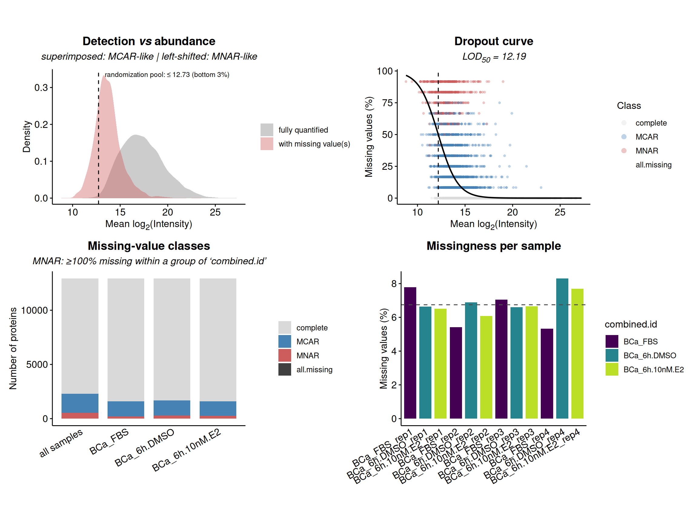
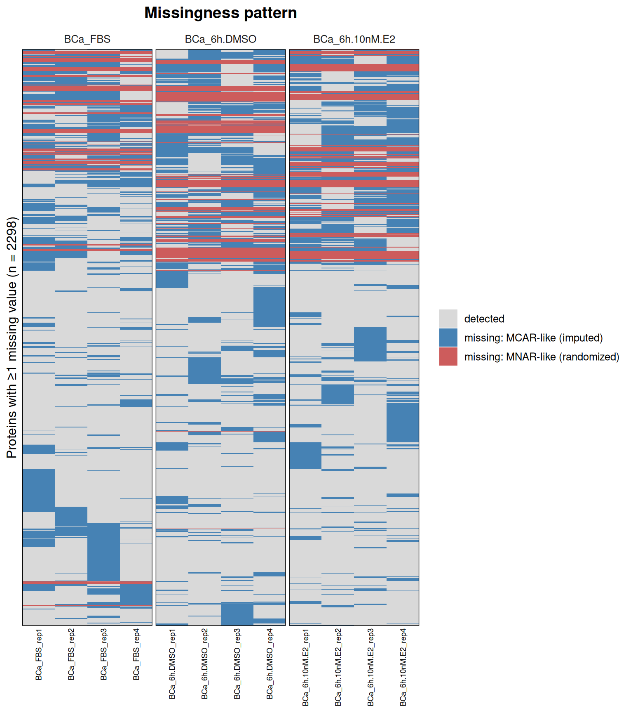
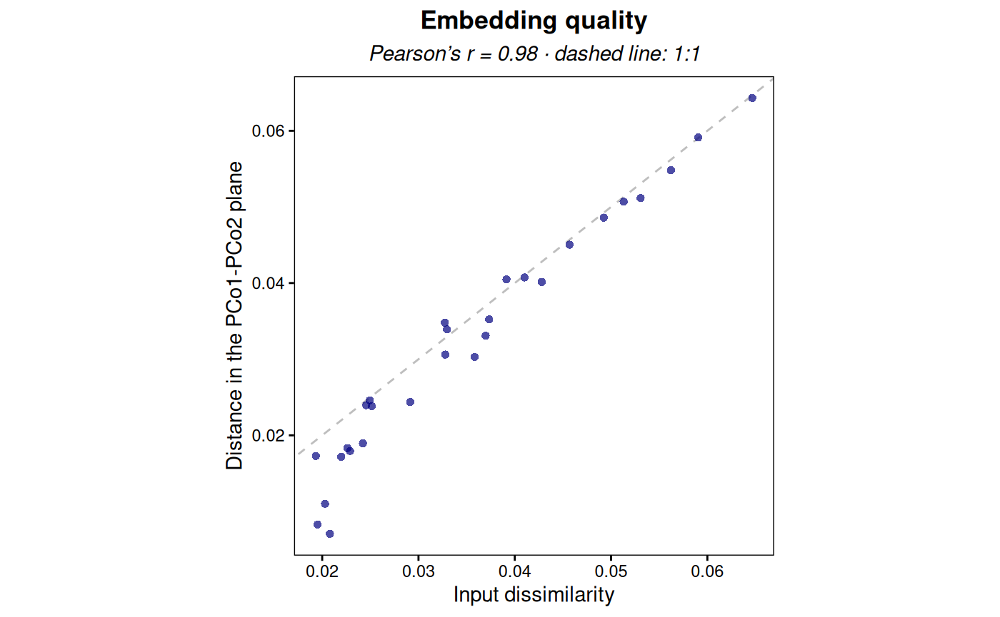
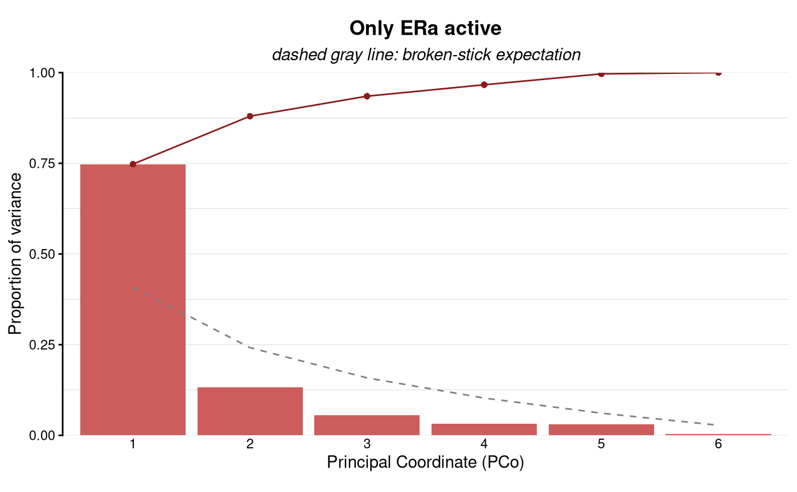
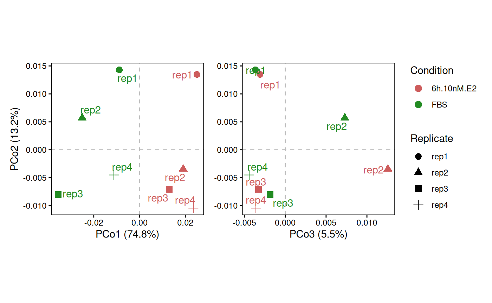
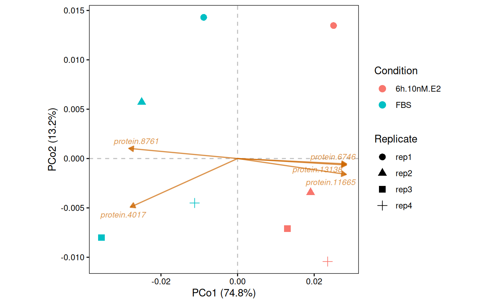
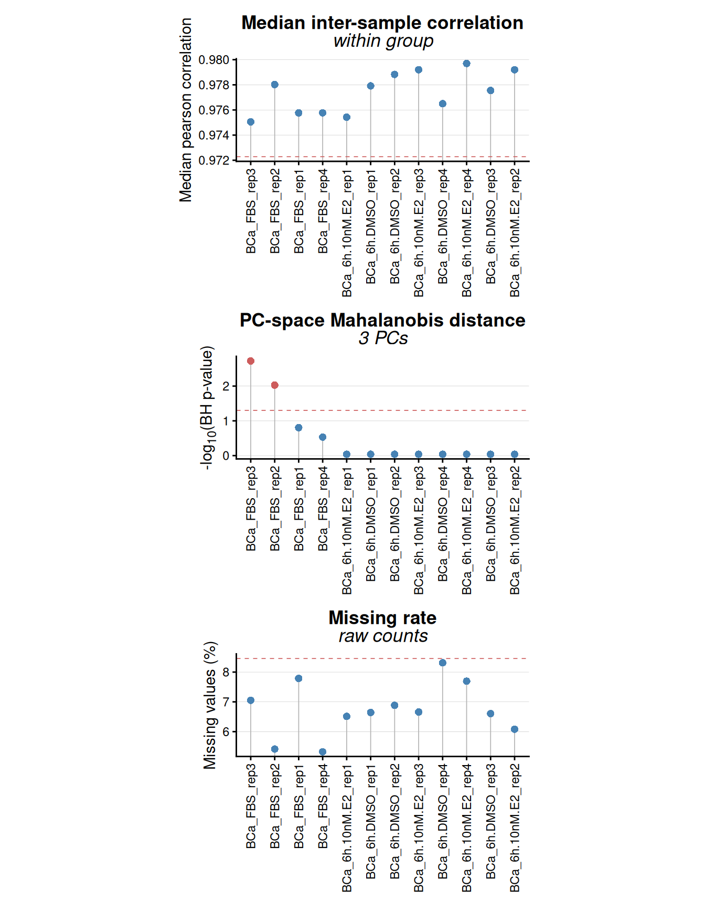
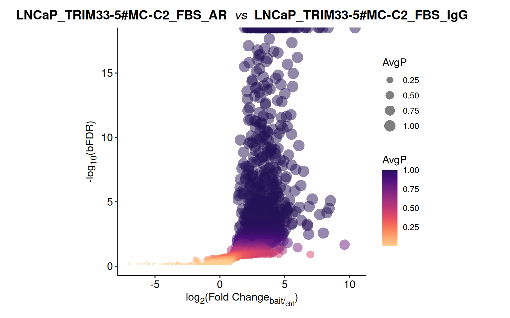
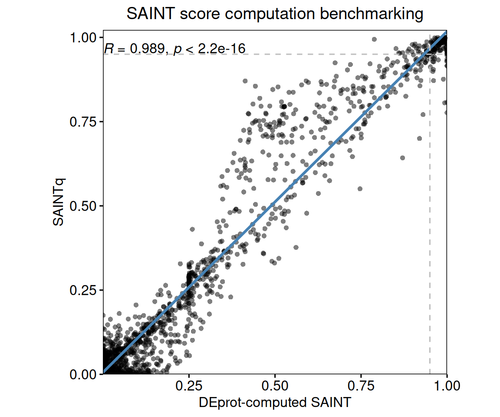

DEprot: R-package for LFQ proteomics data normalization, imputation and Differential Expression analyses
Sebastian Gregoricchio, Ph.D.
Netherlands Cancer Institute, Oncogenomics division, Amsterdam - Netherlandss.gregoricchio@nki.nl
Nils Eickhoff, Ph.D.
Netherlands Cancer Institute, Oncogenomics division, Amsterdam - Netherlandsn.eickhoff@nki.nl
Last update: 09th August, 2026
Source:vignettes/DEprot.overview.vignette.Rmd
DEprot.overview.vignette.Rmd


Introduction
The concept behind DEprot (Differential Expression proteomics) is to provide a toolkit that allows for the normalization, imputation and analyses of the differential protein expression in proteomics data. The data are assumed to be LFQ (label-free quantitation) values.
Citation
If you use this package, please cite:
Citation
DEprot: a comprehensive R-package for the analyses of
label-free quantitation mass-spectrometry data.
Eickhoff N., Hoekman
L., Bleijerveld O., Bergman A.M., Zwart W., Gregoricchio S.
NAR
Genomics and Bioinformatics (2026)
doi:
10.1093/nargab/lqag015
citation("DEprot")
> To cite `DEprot` in publications use:
>
> N. Eickhoff, L. Hoekman, O. Bleijerveld, A.M. Bergman, W. Zwart, S.
> Gregoricchio. 'DEprot: a comprehensive R-package for the analyses of
> label-free quantitation mass-spectrometry data'. NAR Genomics and
> Bioinformatics (2026)
>
> A BibTeX entry for LaTeX users is
>
> @Article{,
> title = {DEprot: a comprehensive R-package for the analyses of label-free quantitation mass-spectrometry data},
> author = {Nils Eickhoff and Liesbeth Hoekman and Onno Bleijerveld and Andries M. Bergman and Wilbert Zwart and Sebastian Gregoricchio},
> journal = {NAR Genomics and Bioinformatics},
> year = {2026},
> volume = {8},
> issue = {1},
> pages = {1-12},
> url = {https://doi.org/10.1093/nargab/lqag015},
> }General workflow
Data can be loaded as raw values, pre-normalized unimputed LFQ values or imputed LFQ values. Further, if multiple batches are available, it is possible to perform batch corrections by combining unimputed LFQ tables and loading these data as “raw” in order to perform a batch harmonization.
Using normalized and imputed data, DEprot will help you
in the differential analyses as well as in performing quality controls
on your data (sample correlation, principal components analyses
(PCA)).

Loading the data
The package starting point is the building of a DEprot
object. This class of objects is specific to this package and requires
at least two elements:
- counts table: this must be a matrix in which the column names represent the samples while the row names identify the proteins. The values in the matrix are assumed to be LFQ (label-free quantification) values, either in linear or log-transformed format.
-
metadata: this must be a data.frame containing at least one
column named
column.id, whose values correspond to the column names of the counts_table. Any other additional column can be added (cell lines, treatment, condition, timing, etc) and used to define groups for differential and quality control (PCA and correlation) analyses.
NOTE: the counts table does not need to be prepared by hand: the output of DIA-NN, Spectronaut, FragPipe or MaxQuant can be loaded directly with
import.external()(see the Import from external tools paragraph).
In the next paragraph we will refer to a dataset (pre-loaded in
DEprot), in which a breast cancer (BCa) cell line was
cultured in either hormone-deprived media or in full media (FBS). If
cultured in hormone-deprived condition, it was then treated for 6 hrs
with either
-estradiol
(E2) or vehicle (DMSO). 4 biological replicates have been analyzed.
Hence, the dataset consists of 1 cell line x 3 conditions x 4
replicates, for a total of 12 samples.
Proteins and samples
have been “anonymized”.
Collect pre-loaded data
The counts represent LFQ values in the log2 format and are not-imputed.
# Metadata
data("sample.config", package = "DEprot")
sample.config| column.id | sample.id | cell | condition | combined.id | replicate |
|---|---|---|---|---|---|
| Sample_A | BCa_FBS_rep1 | BCa | FBS | BCa_FBS | rep1 |
| Sample_B | BCa_6h.DMSO_rep1 | BCa | 6h.DMSO | BCa_6h.DMSO | rep1 |
| Sample_C | BCa_6h.10nM.E2_rep1 | BCa | 6h.10nM.E2 | BCa_6h.10nM.E2 | rep1 |
| Sample_D | BCa_FBS_rep2 | BCa | FBS | BCa_FBS | rep2 |
| Sample_E | BCa_6h.DMSO_rep2 | BCa | 6h.DMSO | BCa_6h.DMSO | rep2 |
| Sample_F | BCa_6h.10nM.E2_rep2 | BCa | 6h.10nM.E2 | BCa_6h.10nM.E2 | rep2 |
| Sample_G | BCa_FBS_rep3 | BCa | FBS | BCa_FBS | rep3 |
| Sample_H | BCa_6h.DMSO_rep3 | BCa | 6h.DMSO | BCa_6h.DMSO | rep3 |
| Sample_I | BCa_6h.10nM.E2_rep3 | BCa | 6h.10nM.E2 | BCa_6h.10nM.E2 | rep3 |
| Sample_J | BCa_FBS_rep4 | BCa | FBS | BCa_FBS | rep4 |
| Sample_K | BCa_6h.DMSO_rep4 | BCa | 6h.DMSO | BCa_6h.DMSO | rep4 |
| Sample_L | BCa_6h.10nM.E2_rep4 | BCa | 6h.10nM.E2 | BCa_6h.10nM.E2 | rep4 |
# log2(LFQ) values (not imputed)
data("unimputed.counts", package = "DEprot")
head(unimputed.counts[,1:6])| Sample_A | Sample_B | Sample_C | Sample_D | Sample_E | Sample_F | |
|---|---|---|---|---|---|---|
| protein.1 | 17.8663 | 18.4581 | 18.7380 | 18.1438 | 18.7811 | 19.3043 |
| protein.2 | 22.5238 | 22.9057 | 23.0183 | 22.3577 | 23.0094 | 23.1491 |
| protein.3 | 16.1388 | 15.3720 | 15.2374 | 17.0161 | 15.5452 | 15.7899 |
| protein.4 | 21.0189 | 21.0513 | 21.0460 | 21.2229 | 21.3352 | 21.0178 |
| protein.5 | 19.1038 | 19.4950 | 19.5529 | 18.5697 | 19.3690 | 19.5156 |
| protein.6 | 15.8377 | 15.4202 | 15.4765 | 15.9765 | 15.3439 | 15.2335 |
Build DEprot object
Now we will combine the counts and metadata to create a
DEprot object (hereafter defined as dpo).
Notice that another important point is whether the data are log
transformed, and if so, which log base was used. Recommended
transformation is the log2(score + 1).
If data are pre-normalized and/or pre-imputed, it can be indicated
with the corresponding parameter data.type, and any
information about the method used that you would like to store in the
object can be added using the corresponding parameters
normalization.method and
imputation.method.
If the metadata table does not contain a column.id
column corresponding to the column names of the
counts_table, it is possible to indicate the name of
another column that should be assumed to be the
column.id.
Besides the samples, also the proteins can carry their own
annotation. The parameter protein.info accepts a data.frame
with one row per protein and any number of columns (gene symbol, protein
description, number of peptides used for the quantification, etc.). The
protein identifiers can be given as row names, in a column called
prot.id, or in any other column indicated through
protein.info.id.column. The table does not need to be
sorted, nor to be complete: it is reordered on the counts, proteins
without annotation are filled with NA, and annotations of
proteins absent from the counts are discarded.
From this moment
on the annotation follows the counts. Whenever proteins are removed, for
instance by remove.undetected.proteins() or
filter.proteins(), the same rows are dropped from the
protein.info slot, so that the two tables always describe the
same proteins.
# Protein annotation
## here a dummy example is generated using the same names of the counts row names
protein.annotation <- data.frame(protein.name = rownames(unimputed.counts))
rownames(protein.annotation) = rownames(unimputed.counts)
head(protein.annotation)| protein.name | |
|---|---|
| protein.1 | protein.1 |
| protein.2 | protein.2 |
| protein.3 | protein.3 |
| protein.4 | protein.4 |
| protein.5 | protein.5 |
| protein.6 | protein.6 |
dpo <- load.counts2(counts = unimputed.counts,
metadata = sample.config,
data.type = "raw",
log.base = 2,
column.id = "column.id",
protein.info = protein.annotation) # set as NULL if not available
dpo
> DEprot object:
> Samples: 12
> Proteins: 12944
> Counts available: raw
> Log transformation: log2
> Metadata columns: column.id, sample.id, cell, condition, combined.id, replicate
> Protein info: protein.nameThe annotation does not need to be provided at loading: it can be
attached at any moment to an object built already. Notice that
overwrite = TRUE is required to replace a table already
stored in the object, while protein.info = NULL removes
it.
dpo <- add.protein.info(DEprot.object = dpo,
protein.info = protein.annotation)The annotation stored in an object can be inspected at any moment
with get.protein.info(), in the same fashion as
get.metadata() for the samples. The row names of the table
returned always correspond to the proteins of the counts, hence the two
tables can be combined directly.
head(get.protein.info(dpo))| protein.name | |
|---|---|
| protein.1 | protein.1 |
| protein.2 | protein.2 |
| protein.3 | protein.3 |
| protein.4 | protein.4 |
| protein.5 | protein.5 |
| protein.6 | protein.6 |
This object is an S4-vector of class DEprot. The
S4-vectors are containers of slots that can be accessed using the symbol
@ (or $ from version >1.3.0) (e.g.,
object@slot.id).
The structure of an object of
class DEprot (and DEprot.analyses) is the
following:
| Slot | Description |
|---|---|
| metadata | data.frame describing the samples: it always contains a
column.id column matching the column names of the counts,
plus any other sample feature (cell line, condition, replicate,
etc.) |
| protein.info | table of extra information about the proteins (gene
symbol, description, etc.), if not available it will be
NULL
|
| raw.counts | table containing the raw counts, if not available it
will be NULL
|
| norm.counts | table containing the normalized counts, if not
available it will be NULL
|
| random.counts | table containing the randomized counts, if not
available it will be NULL
|
| imputed.counts | table containing the imputed counts, if not available
it will be NULL
|
| log.base | a number indicating the base of the log used to
transform the table, if not available it will be NA
|
| log.transformed | logical value indicating whether the data are log-transformed or not |
| normalized | logical value indicating whether the data are normalized or not |
| normalization.method | a string indicating the type of normalization applied,
if not available it will be NA
|
| randomized | logical value indicating whether the data have been randomized or not |
| randomization.method | a list indicating the type of randomization applied, if
not available it will be NA
|
| imputed | logical value indicating whether the data are imputed or not |
| imputation.method | discussed further in the Imputation paragraph |
| boxplot.raw | box+violin plot of the distribution of the LFQ intensities per sample obtained from the raw counts |
| boxplot.norm | box+violin plot of the distribution of the LFQ intensities per sample obtained from the normalized counts |
| boxplot.random | box+violin plot of the distribution of the LFQ intensities per sample obtained from the randomized counts |
| boxplot.imputed | box+violin plot of the distribution of the LFQ intensities per sample obtained from the imputed counts |
| analyses.result.list | discussed further in the Differential Expression analyses paragraph |
| contrasts | discussed further in the Differential Expression analyses paragraph |
| differential.analyses.params | discussed further in the Differential Expression analyses paragraph |
Rename sample columns
As in our example, sometimes the column names of the counts are not
the actual names of the samples, but rather an internal identifier.
However, it is possible to rename the counts columns by indicating any
column of the metadata table (having unique values). The original
identifiers are stored in a new column (old.column.id) of
the metadata.
Notice that the renaming will be applied to all
the counts tables available.
dpo <- rename.samples(DEprot.object = dpo,
metadata.column = "sample.id")
get.metadata(dpo)
> column.id sample.id cell condition combined.id
> 1 BCa_FBS_rep1 BCa_FBS_rep1 BCa FBS BCa_FBS
> 2 BCa_6h.DMSO_rep1 BCa_6h.DMSO_rep1 BCa 6h.DMSO BCa_6h.DMSO
> 3 BCa_6h.10nM.E2_rep1 BCa_6h.10nM.E2_rep1 BCa 6h.10nM.E2 BCa_6h.10nM.E2
> 4 BCa_FBS_rep2 BCa_FBS_rep2 BCa FBS BCa_FBS
> 5 BCa_6h.DMSO_rep2 BCa_6h.DMSO_rep2 BCa 6h.DMSO BCa_6h.DMSO
> 6 BCa_6h.10nM.E2_rep2 BCa_6h.10nM.E2_rep2 BCa 6h.10nM.E2 BCa_6h.10nM.E2
> 7 BCa_FBS_rep3 BCa_FBS_rep3 BCa FBS BCa_FBS
> 8 BCa_6h.DMSO_rep3 BCa_6h.DMSO_rep3 BCa 6h.DMSO BCa_6h.DMSO
> 9 BCa_6h.10nM.E2_rep3 BCa_6h.10nM.E2_rep3 BCa 6h.10nM.E2 BCa_6h.10nM.E2
> 10 BCa_FBS_rep4 BCa_FBS_rep4 BCa FBS BCa_FBS
> 11 BCa_6h.DMSO_rep4 BCa_6h.DMSO_rep4 BCa 6h.DMSO BCa_6h.DMSO
> 12 BCa_6h.10nM.E2_rep4 BCa_6h.10nM.E2_rep4 BCa 6h.10nM.E2 BCa_6h.10nM.E2
> replicate old.column.id
> 1 rep1 Sample_A
> 2 rep1 Sample_B
> 3 rep1 Sample_C
> 4 rep2 Sample_D
> 5 rep2 Sample_E
> 6 rep2 Sample_F
> 7 rep3 Sample_G
> 8 rep3 Sample_H
> 9 rep3 Sample_I
> 10 rep4 Sample_J
> 11 rep4 Sample_K
> 12 rep4 Sample_Lhead(dpo@raw.counts[,1:6])
> BCa_FBS_rep1 BCa_6h.DMSO_rep1 BCa_6h.10nM.E2_rep1 BCa_FBS_rep2
> protein.1 17.8663 18.4581 18.7380 18.1438
> protein.2 22.5238 22.9057 23.0183 22.3577
> protein.3 16.1388 15.3720 15.2374 17.0161
> protein.4 21.0189 21.0513 21.0460 21.2229
> protein.5 19.1038 19.4950 19.5529 18.5697
> protein.6 15.8377 15.4202 15.4765 15.9765
> BCa_6h.DMSO_rep2 BCa_6h.10nM.E2_rep2
> protein.1 18.7811 19.3043
> protein.2 23.0094 23.1491
> protein.3 15.5452 15.7899
> protein.4 21.3352 21.0178
> protein.5 19.3690 19.5156
> protein.6 15.3439 15.2335Data normalization
When a DEprot object is loaded, automatically a
box/violin plot showing the distribution of the LFQ values per samples
is generated.
This representation is useful to estimate whether
the data are normalized or not. Boxplots display the quantiles of the
LFQ intensities, while red and blue dashed lines correspond to maximum
and minimum LFQ value for each sample.
dpo@boxplot.raw
In this package we apply the Modified Balanced Quantile Normalization
(MBQN) from the MBQN
package, developed by E.Brombacher et
al. (Proteomics, 2020). The modification balances the
median (or mean) intensity of features (rows) which are rank invariant
(RI) or nearly rank invariant (NRI) across samples (columns) before
quantile normalization. This prevents an over-correction of the
intensity profiles of RI and NRI features by classical quantile
normalization and therefore supports the reduction of systematics in
downstream analyses.
dpo <- normalize.counts(DEprot.object = dpo,
NRI.RI.ratio.threshold = 0.5,
balancing.function = "median")
dpo
> DEprot object:
> Samples: 12
> Proteins: 12944
> Counts available: raw, normalized
> Log transformation: log2
> Metadata columns: column.id, sample.id, cell, condition, combined.id, replicate, old.column.id
> Protein info: protein.namedpo@normalization.method
> param value
> 1 package MBQN
> 2 method Quantile normalization
> 3 balanced TRUE
> 4 function median
> 5 NRI/RI ratio threshold 0.5head(dpo@raw.counts[,1:6])
> BCa_FBS_rep1 BCa_6h.DMSO_rep1 BCa_6h.10nM.E2_rep1 BCa_FBS_rep2
> protein.1 17.8663 18.4581 18.7380 18.1438
> protein.2 22.5238 22.9057 23.0183 22.3577
> protein.3 16.1388 15.3720 15.2374 17.0161
> protein.4 21.0189 21.0513 21.0460 21.2229
> protein.5 19.1038 19.4950 19.5529 18.5697
> protein.6 15.8377 15.4202 15.4765 15.9765
> BCa_6h.DMSO_rep2 BCa_6h.10nM.E2_rep2
> protein.1 18.7811 19.3043
> protein.2 23.0094 23.1491
> protein.3 15.5452 15.7899
> protein.4 21.3352 21.0178
> protein.5 19.3690 19.5156
> protein.6 15.3439 15.2335Also in this case a box/violin plot with the corresponding normalized LFQ values per each sample is generated and stored in a vector slot.
plot(dpo, nrow = 1)
Batch effect correction
Proteomics is highly susceptible to batch effects. Hereafter we use
the HarmonizR
package, developed by H.Voß &
S.Schlumbohm (Nat.Commun., 2022). This tool, besides
handling multiple experiments, allows for the batch correction of data
derived from the combination of both DIA (Data-Independent Acquisition)
and DDA (Data-Dependent Acquisition).
HarmonizRis not a required dependency, therefore if this function is used andHarmonizRis not already installed, a warning will indicate the required installation. The package can be installed by:BiocManager::install("HarmonizR"), or alternativelydevtools::install_github("https://github.com/SimonSchlumbohm/HarmonizR/", subdir = "HarmonizR").
To use harmonize.batches it is sufficient to provide a
DEprot object containing a combined table of multiple
experiments and indicate the identifier of a column in the metadata
table which corresponds to the batch annotation. The result is a
DEprot object with the same structure described in the
previous paragraph.
Here, for simplicity, we will add manually a
column to the metadata table with “dummy” batches.
Batch harmonization replaces the normalization: so data can be loaded as ‘raw’ and “normalized” using
harmonize.batches. Do not apply additional MBQN normalization.
## Adding batch column to the metadata table
dpo@metadata$batch = rep(c("batch_1","batch_2"), each = 6)
get.metadata(dpo)> column.id sample.id cell condition combined.id
> 1 BCa_FBS_rep1 BCa_FBS_rep1 BCa FBS BCa_FBS
> 2 BCa_6h.DMSO_rep1 BCa_6h.DMSO_rep1 BCa 6h.DMSO BCa_6h.DMSO
> 3 BCa_6h.10nM.E2_rep1 BCa_6h.10nM.E2_rep1 BCa 6h.10nM.E2 BCa_6h.10nM.E2
> 4 BCa_FBS_rep2 BCa_FBS_rep2 BCa FBS BCa_FBS
> 5 BCa_6h.DMSO_rep2 BCa_6h.DMSO_rep2 BCa 6h.DMSO BCa_6h.DMSO
> 6 BCa_6h.10nM.E2_rep2 BCa_6h.10nM.E2_rep2 BCa 6h.10nM.E2 BCa_6h.10nM.E2
> 7 BCa_FBS_rep3 BCa_FBS_rep3 BCa FBS BCa_FBS
> 8 BCa_6h.DMSO_rep3 BCa_6h.DMSO_rep3 BCa 6h.DMSO BCa_6h.DMSO
> 9 BCa_6h.10nM.E2_rep3 BCa_6h.10nM.E2_rep3 BCa 6h.10nM.E2 BCa_6h.10nM.E2
> 10 BCa_FBS_rep4 BCa_FBS_rep4 BCa FBS BCa_FBS
> 11 BCa_6h.DMSO_rep4 BCa_6h.DMSO_rep4 BCa 6h.DMSO BCa_6h.DMSO
> 12 BCa_6h.10nM.E2_rep4 BCa_6h.10nM.E2_rep4 BCa 6h.10nM.E2 BCa_6h.10nM.E2
> replicate old.column.id batch
> 1 rep1 Sample_A batch_1
> 2 rep1 Sample_B batch_1
> 3 rep1 Sample_C batch_1
> 4 rep2 Sample_D batch_1
> 5 rep2 Sample_E batch_1
> 6 rep2 Sample_F batch_1
> 7 rep3 Sample_G batch_2
> 8 rep3 Sample_H batch_2
> 9 rep3 Sample_I batch_2
> 10 rep4 Sample_J batch_2
> 11 rep4 Sample_K batch_2
> 12 rep4 Sample_L batch_2
## batch correction
dpo <- harmonize.batches(DEprot.object = dpo,
batch.column = "batch",
cores = 1)NOTE: By default
harmonize.batchesusesComBat. If your batch design is sparse (i.e., a batch with a single sample, or proteins measured only once in a batch) ComBat can fail with a singular-matrix error; see next paragraph to know how to fix it usinglimmainstead.
When to use limma instead of ComBat
The function harmonize.batches runs ComBat
by default. ComBat adjusts each batch for both its mean and its
variance, which is the right model when batches differ in spread as well
as in level. The catch is that estimating a per-batch variance needs at
least 2 values per batch. When a batch has a single sample, or a protein
is measured only once within a batch, the sub-matrix ComBat tries to
solve becomes singular and the run stops with an error such as
Lapack routine dgesv: system is exactly singular.
For these cases, set algorithm = "limma".
limma’s removeBatchEffect corrects the batch
means only, so it handles sparse and small batches that ComBat cannot.
The trade-off is that real variance differences between batches stay in
the data, so keep ComBat as the default and switch to limma when your
batch design is too sparse for it.
dpo <- harmonize.batches(DEprot.object = dpo,
batch.column = "batch",
algorithm = "limma",
cores = 1)Data imputation
Often many NA/NaN values are present in the
LFQ tables due to the technical limitations of the protein detection in
Mass Spectrometry (MS) experiments.
Here we provide the possibility to use 9 different methods for the imputation of the data:
-
missForest: developed by DJ.Stekhoven & P.Buehlmann (Bioinformatics, 2012), this tool will impute the NaNs and assign an estimated value. It also yields an out-of-bag (OOB) imputation error estimate (general, or for each sample). Moreover, it can be run in parallel to save computation time (both examples reported hereafter). - k-Nearest Neighbors (kNN) algorithm
- correlation-Nearest Neighbors (corkNN) algorithm
- truncated-Nearest Neighbors (tkNN) algorithm
- Local Least Squares (LLS) imputation, using the pearson correlation coefficient
- Singular Value Decomposition (SVD)
- Glmnet ridge regression (RegImpute, from DreamAI)
- Probabilistic Principal Component Analysis (PPCA)
- Bayesian Principal Component Analysis (BPCA)
Of note, there are cases in which the missing data are not random but
rather the consequence of real biological effects (i.e., knock-down,
knock-out, degron systems and PROTACs, etc.). This may lead to the issue
that a protein completely missing in all the replicates of an individual
condition will be imputed with relatively high numbers. This would
ultimately lead to the incorrect definition of the differential status
of this protein. To overcome this, it is possible to use the function
randomize.missing.values to assign random values from the
bottom distribution of the full dataset. The user can define a
percentage threshold of minimal missing values within the group; for
instance if the threshold is 75% and in each group there are 4 samples,
it means that only proteins with at least 3 out of 4 missing values will
be imputed. It will be sufficient to indicate the ID of a column
belonging to the metadata which indicates the groups/conditions and the
percentage of distribution from which to select random numbers
(“tail.percentage”).
dpo <- randomize.missing.values(DEprot.object = dpo,
group.column = "combined.id",
percentage.missing = 100, # completely missing
tail.percentage = 3,
seed = 1234,
verbose = FALSE)Using the
"column.id"as group.column is equivalent to impute all the data with this method.
Missingness diagnostics
Before choosing randomization/imputation strategy it is worth asking
why the values are missing. As briefly mentioned before, two
mechanisms are usually mixed in the same LFQ table: values that are
absent because the protein was below the detection limit of the
instrument (MNAR, missing not at random, or left-censored) and
values that are absent for reasons unrelated to the abundance, such as a
failed identification in a single run (MCAR, missing completely at
random). The two require opposite treatments. Replacing a
left-censored value with an estimate derived from the other replicates
pushes it upwards, which is exactly the artefact that
randomize.missing.values avoids; conversely, assigning a
value from the bottom of the distribution to a protein that was simply
not identified in one run out of twelve introduces a fold change that
does not exist.
The function missingness.diagnostic describes the
structure of the missing values and classifies them following the same
rule used by the double-imputation strategy of DEprot:
within each group of replicates, a protein missing in at least
percentage.missing% of the samples is flagged as MNAR-like
(it would be replaced by randomize.missing.values using the
bottom tail.percentage% of the distribution), while all the
remaining missing values are flagged as MCAR-like (they would be
replaced by impute.counts).
The counts used are chosen automatically: since randomization and
imputation both fill the NAs, the function takes the lowest
level available following the priority raw > normalized >
randomized > imputed, and stops if only imputed counts are found. If
randomize.missing.values has already been run, the
parameters (group.column, percentage.missing,
tail.percentage) are read back from the object, so that the
diagnostic mirrors the treatment actually applied; otherwise the
defaults of randomize.missing.values are used and any of
them can be overwritten manually.
miss <- missingness.diagnostic(DEprot.object = dpo,
verbose = FALSE)
miss
> DEprot.missingness object:
> Counts used: raw (available: raw, normalized, randomized)
> Proteins: 12944
> Samples: 12
> Group column: combined.id
> MNAR defined when: >= 100% missing values within a group
> Parameters: randomization
>
> Missing values: 10481/155328 (6.75%)
> of which MNAR: 3056 (29.2% of the missing values)
> of which MCAR: 7425 (70.8% of the missing values)
>
> Estimated LOD50: 12.186
> Dropout slope: -0.984 (p = <2e-16)
> Intensity shift: incomplete - complete = -3.571 (p = <2e-16)
>
> Interpretation: the missingness is intensity-dependent (MNAR/left-censoring is dominant).
>
> Proteins per missing-value class:
> missing.class n.proteins percentage
> 1 complete 10646 82.246601
> 2 MCAR 1772 13.689740
> 3 MNAR 526 4.063659
> 4 all.missing 0 0.000000The parameters are retrieved from the randomization run above; passing
group.column,percentage.missingortail.percentageexplicitly overrides them, which is useful to check how many proteins would change class with a different threshold.
Reading the diagnostic plots
The default plot call combines the four panels that are
most informative for the choice of the strategy; each plot is stored
individually in the plots slot and can be recalled with the
plot.type argument ("density",
"dropout", "heatmap", "samples",
"frequency", "classes",
"similarity", "upset",
"contrasts", or "all").
plot(miss, ncol = 2)
Detection vs abundance
The first panel compares the distribution of the average intensity of
the proteins quantified in all the samples with that of the proteins
showing at least one missing value. If the two densities overlap, the
missing values are spread over the whole dynamic range and are
compatible with a MCAR mechanism. If the incomplete proteins are shifted
to the left, their absence is a function of their abundance, which is
the signature of left-censoring. The dashed line marks the intensity
threshold corresponding to the bottom tail.percentage% of
the distribution, that is the pool from which
randomize.missing.values samples the replacement
values.
Dropout curve
This is the panel that quantifies what the density plot shows qualitatively, and it deserves a longer explanation.
Each point is a protein: on the x-axis its mean intensity computed
over the samples in which it was measured, on the y-axis the percentage
of samples in which it is missing. Proteins quantified everywhere sit on
the bottom line, proteins detected only sporadically sit at the top. The
black curve is a logistic regression of the number of missing values
over the total number of samples as a function of the mean intensity
(glm(cbind(n.missing, n.detected) ~ mean.intensity, family = binomial)),
and the corresponding model is stored in the dropout.model
slot.
Three numbers summarize the fit, all available in
global.stats:
-
dropout.slope: the slope of the logistic model, on the logit scale. A negative slope means that the probability of a value being missing decreases as the abundance increases, which is what a detection limit produces. A slope close to zero describes missing values scattered over the whole intensity range, independently of the abundance. -
dropout.pvalue: the p-value of the slope. With several thousand proteins even a very shallow slope reaches significance, therefore the magnitude of the slope and the shape of the curve are more informative than the p-value alone. -
LOD50: the intensity at which the model predicts 50% of missing values, computed as-intercept/slope. It is an empirical estimate of the limit of detection of the experiment and it is drawn as a vertical dashed line. It is reported only when it falls inside the range of the observed intensities; when the dropout is shallow the 50% point lies far outside the data and an extrapolated value would be meaningless, soNAis returned instead.
A fourth number completes the picture:
intensity.shift.pvalue, the one-sided Wilcoxon test
comparing the mean intensity of the incomplete proteins with that of the
complete ones, together with the two medians
(median.intensity.incomplete and
median.intensity.complete). The show method
combines slope and p-value into a one-line interpretation of the
dominant mechanism.
Two comparisons make the numbers actionable. First,
LOD50 against the threshold of the randomization pool
(tail.threshold, the dashed line of the density panel):
when the pool sits at or below the estimated detection limit, the values
drawn by randomize.missing.values fall in the region where
the instrument stops detecting, which is what the method assumes. A pool
sitting well above LOD50 means that the randomized values
are higher than the censoring point and the fold changes of the MNAR
proteins will be compressed; lowering tail.percentage
corrects it. Second, the fraction of missing values that are MNAR-like
(perc.missing.MNAR): a steep dropout curve combined with a
low MNAR fraction means that most of the censored values are scattered
rather than concentrated within a group, so they will be handled by the
imputation and not by the randomization.
One caveat when reading the top of the plot. The mean intensity is
computed on the observed values only, so a protein missing in most of
the samples has its abundance estimated from the few measurements that
survived, which are the ones that happened to be above the detection
limit. This inflates the abundance of the highly incomplete proteins and
flattens the right tail of the curve, so the real dropout is usually
somewhat steeper than the fitted one. LOD50 is best used as
an internal reference for comparing datasets processed in the same way,
rather than as a physical property of the instrument.
Missing-value classes and missingness pattern
The bar plot counts the proteins per class, both globally and within
each group of replicates: complete (no missing value),
MCAR (missing values below the group threshold),
MNAR (at least one group above the threshold) and
all.missing (never detected). The proteins in the last
class carry no information and are the ones to remove before
testing.
The heatmap (plot.type = "heatmap") shows the same
classification at the level of the single value. Each cell is colored
according to the treatment that the double-imputation strategy would
apply to it, so the plot doubles as a map of what is about to be
modified in the counts table: the cells marked as MNAR-like will receive
a random value from the bottom of the distribution, the ones marked as
MCAR-like will be imputed. Proteins are clustered on the binary
detection pattern and the samples are grouped by condition, which makes
the blocks of condition-specific absence immediately visible. The same
information is stored, without subsampling, in the
imputation.map slot.
plot(miss, plot.type = "heatmap")
Sample-level diagnostics
Two panels describe the samples rather than the proteins. The bar
plot of the percentage of missing values per sample
(plot.type = "samples") identifies runs of lower quality; a
single sample well above the average is usually a technical problem and
is a candidate for exclusion. The heatmap of the Jaccard similarity
between detection patterns (plot.type = "similarity")
compares which proteins were detected in which sample: the samples are
clustered on 1 - Jaccard and the dendrogram is drawn on the
left. If the clusters follow the experimental conditions, part of the
missingness is biological; if they follow the batches or the acquisition
order, the missingness is structured by a technical factor and the
imputation should be evaluated with that in mind. The matrix and the
hclust object are kept in the jaccard.matrix
and jaccard.cluster slots.
Finally, plot.type = "frequency" gives the number of
proteins as a function of the number of samples in which they were
detected. The distribution is typically bimodal, with a peak on the
right corresponding to the core proteome and a peak on the left
corresponding to the sporadic identifications, while
plot.type = "upset" shows how the MNAR-like proteins are
shared between the groups.
Contrast-level diagnostics
When a DEprot.analyses object is used as input, the
diagnostic is repeated on the samples of each contrast and the results
are collected in the contrast.stats slot (use the
contrasts argument to restrict the analysis to a subset, or
contrasts = "none" to skip it). Within a contrast the
classification becomes directional: besides complete and
MCAR, a protein can be MNAR in the first group, MNAR in the
second, or missing in both. The last case is reported in the
testable column as FALSE, since a protein
absent from both sides carries no information for that comparison
whatever value the imputation assigns to it. The two plots of each
contrast (plot(miss, plot.type = "contrasts")) show the
number of proteins per class and the detection vs abundance
densities restricted to those samples, and summary()
returns the same counts for all the contrasts in a single table.
The DEprot.missingness object contains the following
slots:
| Slot | Description |
|---|---|
| data.used | vector indicating the type of counts used (raw, normalized, randomized, imputed) |
| counts.available | vector indicating all the counts tables available in the input object |
| metadata | metadata of the samples analyzed (subset of the
original DEprot@metadata) |
| group.column | string indicating the metadata column used to define the groups of replicates |
| missing.matrix | logical matrix (proteins x samples) in which
TRUE indicates a missing value |
| imputation.map | character matrix (proteins x samples) indicating for
each value the treatment of the double-imputation strategy:
detected, MNAR (randomized) or
MCAR (imputed) |
| protein.stats |
data.frame with one row per protein:
number and frequency of missing values (globally and per group),
mean/sd/min/max intensity and the assigned
missing.class
|
| sample.stats |
data.frame with one row per sample: number
and percentage of missing values, split by class |
| group.summary |
data.frame with one row per group of
replicates summarizing the missing values and the proteins per
class |
| pattern.summary |
data.frame with the number and percentage
of proteins in each missing-value class |
| global.stats | list of global metrics: total percentage of missing
values, fraction of MNAR-like missing values, LOD50, slope
and p-value of the dropout model, p-value of the intensity shift, and
the threshold of the randomization pool |
| dropout.model | object of class glm corresponding to the
logistic dropout model |
| plots | list of ggplot objects
(detection.density, dropout.curve,
missingness.heatmap, missing.per.sample,
detection.frequency, pattern.barplot,
sample.similarity, upset) |
| jaccard.matrix | the sample-vs-sample Jaccard similarity matrix of the detection patterns |
| jaccard.cluster |
hclust object generated by
hclust(d = as.dist(1 - jaccard.matrix), method = cluster.method)
|
| contrast.stats | list with the contrast-level diagnostics
(NULL when no DEprot.analyses object is
provided) |
| parameters | list of the parameters used, including the source of
percentage.missing and tail.percentage
(user-defined or retrieved from the randomization) |
Choice of the imputation method
We implemented the function compare.imp.methods to
compare the different imputation methods and choose the best one for
your data type. Indeed, your dataset is subsampled and NAs are
introduced simulating the distribution and the proportion of the
original data.
imp.comparison <- compare.imp.methods(DEprot.object = dpo,
percentage.test = 30,
sample.group.column = "combined.id",
which.data = "normalized",
seed = 1234,
run.kNN = FALSE, # time consuming
verbose = FALSE)
> [1] "Back Filling With Method: row_mean"
> [1] "Starting Imputation With 10 Max. Iterations"
> [1] "Working on Iteration: 1 / 10"
> [1] "Working on Iteration: 2 / 10"
> [1] "NRMSE = 0.0268582803018331"
> [1] "Working on Iteration: 3 / 10"
> [1] "NRMSE = 0.00694866126125574"
> [1] "Working on Iteration: 4 / 10"
> [1] "NRMSE = 0.00252625183362421"
> [1] "Working on Iteration: 5 / 10"
> [1] "NRMSE = 0.00112688471581067"
> [1] "Working on Iteration: 6 / 10"
> [1] "NRMSE = 0.000560332507945788"
> [1] "Working on Iteration: 7 / 10"
> [1] "NRMSE = 0.000303996864063823"
> [1] "Working on Iteration: 8 / 10"
> [1] "NRMSE = 0.000178104946759923"
> [1] "Working on Iteration: 9 / 10"
> [1] "NRMSE = 0.000110786879449151"
> [1] "Working on Iteration: 10 / 10"
> [1] "NRMSE = 7.17606448103082e-05"
patchwork::wrap_plots(c(imp.comparison@correlation.plots,
imp.comparison@density.residuals))
> imputation.method RMSE correlation.coeff processing.time rank
> tkNN tkNN 0.5132982 0.9852705 2.06 1
> corkNN corkNN 0.5135173 0.9851722 1.96 2
> BPCA BPCA 0.5140276 0.9862672 118.20 3
> RegImpute RegImpute 0.5190934 0.9861203 9.24 4
> PPCA PPCA 0.5359473 0.9813049 0.90 5
> SVD SVD 0.5442393 0.9791497 3.27 6
> missForest missForest 0.5664830 0.9813784 30.18 7
> LLS LLS 0.6326730 0.9684621 4.60 8Apply imputation
Hereafter, an example in how to use the missForest
method to impute the data:
## Without parallelization
dpo <- impute.counts(DEprot.object = dpo,
method = "missForest",
which.data = "randomized",
missForest.max.iterations = 100,
missForest.variable.wise.OOBerror = TRUE,
seed = 1234)
## With parallelization
dpo <- impute.counts(DEprot.object = dpo,
method = "missForest",
which.data = "randomized",
missForest.max.iterations = 100,
missForest.variable.wise.OOBerror = TRUE,
missForest.cores = 20,
missForest.parallel.mode = "variables",
seed = 1234)
dpo
head(dpo@imputation.method$OOBerror)
data.frame(dpo@imputation.method[-3])> DEprot object:
> Samples: 12
> Proteins: 12944
> Counts available: raw, normalized, randomized, imputed
> Log transformation: log2
> Metadata columns: column.id, sample.id, cell, condition, combined.id, replicate, old.column.id> BCa_FBS_rep1 BCa_6h.DMSO_rep1 BCa_6h.10nM.E2_rep1 BCa_FBS_rep2
> 0 0 0 0
> BCa_6h.DMSO_rep2 BCa_6h.10nM.E2_rep2
> 0 0| method | max.iterations | parallelization.mode | cores | processing.time | seed |
|---|---|---|---|---|---|
| missForest | 100 | variables | 20 | 1.67 hours | 1234 |
Also in this case a box/violin plot with the corresponding imputed LFQ values per each sample is generated and stored in a vector slot.
plot(dpo, ncol = 2)
Sample similarities
Principal Component Analyses (PCA)
PCA can be used to perform a dimensionality reduction and determine
which factor explains the variability of the samples.DEprot includes functions dedicated to this aim and
specifically built to work with DEprot objects.
Notice that, even if the data are not log-transformed,
perform.PCA will do it before performing the analyses.
Compute PCs
## Perform the analyses (DEprot.PCA object)
PCA <- perform.PCA(DEprot.object = dpo,
which.data = "imputed") # possible: raw, normalized, imputedThe DEprot.PCA object contains the following slots:
| Slot | Description |
|---|---|
| PCA.metadata | metadata of the samples used in the PCA (subset of the
original DEprot@metadata) |
| sample.subset | vector containing the list of samples analyzed |
| data.used | vector indicating the type of counts used (imputed, normalized, raw) |
| prcomp | object of class prcomp corresponding to
the full PCA output |
| PCs |
data.frame combining the PC scores and the
metadata table, useful for replotting |
| importance | statistical summary table for the PCA analyses per each PC |
| cumulative.PC.plot |
ggplot object corresponding to the output
of plot.PC.cumulative for this object |
Visualize PCAs
## Plot cumulative variance of all PCs
#### equivalent to `PCA@cumulative.PC.plot`
plot.PC.cumulative(DEprot.PCA.object = PCA,
bar.color = "steelblue",
line.color = "navyblue")
## Plot PC scatters
PC_1.2 <-
plot.PC.scatter(DEprot.PCA.object = PCA,
PC.x = 1,
PC.y = 2,
color.column = "condition",
shape.column = "replicate",
label.column = NULL,
plot.zero.line.x = TRUE,
plot.zero.line.y = TRUE) +
theme(legend.position = "none")
PC_2.3 <-
plot.PC.scatter(DEprot.PCA.object = PCA,
PC.x = 2,
PC.y = 3,
color.column = "condition",
shape.column = "replicate",
label.column = NULL,
plot.zero.line.x = TRUE,
plot.zero.line.y = TRUE)
patchwork::wrap_plots(PC_1.2, PC_2.3, nrow = 1)
Alternatively, the combination of PC1.2 and PC2.3 can be
automatically generated using the function
plot.PC.scatter.123:
plot.PC.scatter.123(DEprot.PCA.object = PCA,
color.column = "condition",
shape.column = "replicate",
label.column = "replicate",
dot.colors = c("6h.10nM.E2" = "indianred",
"6h.DMSO" = "steelblue",
"FBS" = "forestgreen"),
plot.zero.line.y.12 = TRUE,
plot.zero.line.x.12 = TRUE,
plot.zero.line.y.23 = TRUE,
plot.zero.line.x.23 = TRUE)
PC biplot
It is also possible to visualize the top proteins driving the sample
segregation along the PCs using plot.PC.biplot. This
function overlays protein loading arrows on the PCA scatter: each arrow
points in the direction of the protein’s contribution, and its length
reflects the magnitude. The n.loadings parameter controls
how many top contributing proteins should be displayed.
PC_biplot_1.2 <-
plot.PC.biplot(DEprot.PCA.object = PCA,
PC.x = 1,
PC.y = 2,
color.column = "condition",
shape.column = "replicate",
label.column = NULL,
n.loadings = 5,
plot.zero.line.x = TRUE,
plot.zero.line.y = TRUE)
PC_biplot_1.2
Analyze PCs on a sample subset
These analyses can also be performed for a subset of samples by
indicating the sample names of interest.
In the example below
we will use only the samples in which the estrogen receptor is active
(E2 and FBS conditions).
## Perform the analyses (DEprot.PCA object)
PCA.fbs.e2 <-
perform.PCA(DEprot.object = dpo,
sample.subset = dpo@metadata$column.id[grepl("E2|FBS",
dpo@metadata$column.id)],
which.data = "imputed")
## Plot cumulative variance of all PCs
plot.PC.cumulative(DEprot.PCA.object = PCA.fbs.e2,
bar.color = "indianred",
line.color = "firebrick4",
title = "**Only ERa active**")
## Plot PC scatters
PC.fbs.e2_1.2 <-
plot.PC.scatter(DEprot.PCA.object = PCA.fbs.e2,
PC.x = 1,
PC.y = 2,
color.column = "condition",
shape.column = "replicate",
label.column = NULL,
plot.zero.line.x = TRUE,
plot.zero.line.y = TRUE) +
theme(legend.position = "none")
PC.fbs.e2_2.3 <-
plot.PC.scatter(DEprot.PCA.object = PCA.fbs.e2,
PC.x = 2,
PC.y = 3,
color.column = "condition",
shape.column = "replicate",
label.column = NULL,
plot.zero.line.x = TRUE,
plot.zero.line.y = TRUE)
patchwork::wrap_plots(PC.fbs.e2_1.2, PC.fbs.e2_2.3, nrow = 1)
Correlations
Another method to define the sample clustering/groups is the overall
correlation between the samples.
Hierarchical clustering is
performed using the 1 - correlation values, since the
hierarchical clustering algorithm is based on dissimilarities while the
correlations are an index of similarity.
corr.all.samples <-
plot.correlation.heatmap(DEprot.object = dpo,
which.data = "imputed",
palette = viridis::mako(n = 10, direction = -1, begin = 0.25),
correlation.scale.limits = c(0.9,1),
correlation.method = "pearson",
plot.subtitle = "All samples",
display.values = TRUE)
corr.all.samples
Also in this case the sample correlation can be computed for a subset of samples as shown before for the PCAs.
corr.ERa.active <-
plot.correlation.heatmap(DEprot.object = dpo,
which.data = "imputed",
sample.subset = dpo@metadata$column.id[grepl("E2|FBS",
dpo@metadata$column.id)],
palette = viridis::magma(n = 10, direction = -1, begin = 0.25),
correlation.scale.limits = c(0.9,1),
correlation.method = "pearson",
plot.subtitle = "Only ERa active",
clustering.method = "complete",
display.values = TRUE)
corr.ERa.active
The DEprot.correlation object contains the following
slots:
| Slot | Description |
|---|---|
| heatmap |
ggplot object corresponding to the
correlation heatmap |
| corr.metadata | metadata of the samples used in the correlation (subset
of the original DEprot@metadata) |
| sample.subset | vector containing the list of samples analyzed |
| data.used | vector indicating the type of counts used (imputed, normalized, raw) |
| corr.matrix | the correlation matrix on which the heatmap is based |
| distance | object of class dist corresponding to the
output of as.dist(1 - correlation.matrix)
|
| cluster |
hclust object generated by
hclust(d = as.dist(1 - correlation.matrix), method = clustering.method)
|
| method | String indicating the correlation method used (one among: pearson, spearman, kendall) |
Principal Coordinate Analyses (PCoA)
The same correlation object can be used as input for a Principal
Coordinate Analysis (PCoA, or classical multidimensional scaling).
Differently from the PCA, which relies on the Euclidean distances
between samples, PCoA ordinates the 1 - correlation
dissimilarity already stored in the DEprot.correlation
object - a distance that on LFQ data is often more robust, since it
looks at how the samples co-vary rather than at their absolute
intensities. The perform.PCoA function reads the
correlation object directly; the original dpo object is
required only to compute the protein projections shown in the
biplot.
## Perform the analyses (DEprot.PCoA object)
PCoA.ERa.active <- perform.PCoA(DEprot.correlation.object = corr.ERa.active,
DEprot.object = dpo) # needed only for the biplotBecause 1 - correlation is a dissimilarity rather than a
true metric, the ordination can return negative eigenvalues;
perform.PCoA reports them and computes the variance
percentages from the positive ones. When they are sizeable,
distance.transformation = "sqrt" (or one of the
correction methods) brings the distances back into
euclidean space.
The DEprot.PCoA object parallels the
DEprot.PCA one, and stores in addition the input distance,
the eigenvalue diagnostics and a set of ready-made plots:
| Slot | Description |
|---|---|
| PCos | data.frame combining the principal coordinates and the metadata, useful for replotting |
| distance |
dist object effectively used for the
ordination |
| importance | summary table per coordinate (eigenvalue, % variance, cumulative, broken-stick) |
| euclidean.diagnostics | number and magnitude of the negative eigenvalues, and goodness-of-fit |
| axis.loadings | protein-vs-coordinate projections (only if a
DEprot object was provided) |
| scatter.plot | scatter of the two coordinates chosen at the
perform.PCoA call (PCo2 vs PCo1 by default); a single
ggplot
|
| scatter.plot.123 | the PCo1-vs-PCo2 and PCo3-vs-PCo2 scatters side by
side, sharing PCo2 on the y-axis (a patchwork);
NULL when fewer than three coordinates are available |
| cumulative.PCo.plot | barplot of the variance carried by each coordinate,
with the cumulative curve and the broken-stick reference drawn on top
(ggplot) |
| shepard.plot | embedding-quality check: the input dissimilarities
against the distances reproduced in the two-coordinate plane, with the
1:1 line and Pearson’s r (ggplot) |
A PCoA in two coordinates is only an approximation of the full
distance matrix, so it is worth checking how faithful that approximation
is. The shepard.plot compares the original dissimilarities
(x-axis) with the distances reproduced in the plane actually plotted
(y-axis). The closer the points sit to the dashed 1:1 line, the better
those two coordinates preserve the real distances between samples;
points falling well below it mean the first coordinates are dropping a
good part of the structure, and that either more coordinates or a
different distance.transformation are worth inspecting. The
Pearson’s r reported in the subtitle summarizes this agreement
in a single value.
PCoA.ERa.active@shepard.plot
## Plot cumulative variance of all PCos
#### equivalent to `PCoA.ERa.active@cumulative.PCo.plot`
plot.PCoA.cumulative(DEprot.PCoA.object = PCoA.ERa.active,
bar.color = "indianred",
line.color = "firebrick4",
title = "**Only ERa active**")
## Combined PCo1-vs-PCo2 and PCo3-vs-PCo2 scatters
#### equivalent to `PCoA.ERa.active@scatter.plot.123`
plot.PCoA.scatter.123(DEprot.PCoA.object = PCoA.ERa.active,
color.column = "condition",
shape.column = "replicate",
label.column = "replicate",
dot.colors = c("6h.10nM.E2" = "indianred",
"FBS" = "forestgreen"))
A single pair of coordinates can also be drawn on its own with
plot.PCoA.scatter(DEprot.PCoA.object = PCoA.ERa.active, PCo.x = 1, PCo.y = 2, ...).
## Top proteins associated with the separation (projection onto the PCos)
PCoA_biplot_1.2 <- plot.PCoA.biplot(DEprot.PCoA.object = PCoA.ERa.active,
PCo.x = 1,
PCo.y = 2,
color.column = "condition",
shape.column = "replicate",
label.column = NULL,
n.loadings = 5)
PCoA_biplot_1.2
Unlike the PCA biplot, these arrows represent the a-posteriori
correlation between each protein and the coordinates (not the
prcomp rotation coefficients), so they indicate the
direction a protein follows in the ordination rather than an exact
loading.
Automatic outlier detection
PCAs, PCoAs and correlation heatmaps show which samples behave oddly,
but the call is left to the eye of the analyst. The function
detect.outliers turns that judgement into a reproducible
one: it computes three per-sample quality metrics and flags a sample
when at least min.flags of them are triggered.
The three metrics are deliberately independent from each other:
- the median correlation of a sample against the
others (or against the replicates of its own group, if
group.columnis provided) catches samples whose global profile does not look like anybody else’s; - the Mahalanobis distance in the space of the first principal components catches samples that sit far from the bulk of the data in the reduced space, even when their pairwise correlations look acceptable;
- the missing rate catches samples with a poor identification depth, which is often the underlying cause of the other two.
outliers <- detect.outliers(DEprot.object = dpo,
which.data = "imputed",
group.column = "condition",
correlation.method = "pearson",
n.PCs = 3,
min.flags = 2)
outliers
> DEprot.outliers object:
> Samples analyzed: 12
> Data used: imputed (log2)
> Metrics available: correlation, mahalanobis, missingness
> Flags required: 2
> Outliers: none
>
> Sample metrics:
> column.id group median.correlation correlation.z
> 1 BCa_FBS_rep3 FBS 0.9750531 -1.22859738
> 2 BCa_FBS_rep2 FBS 0.9780257 0.13478569
> 3 BCa_FBS_rep1 FBS 0.9757698 -0.89986923
> 4 BCa_FBS_rep4 FBS 0.9757698 -0.89986923
> 5 BCa_6h.10nM.E2_rep1 6h.10nM.E2 0.9754252 -1.05793021
> 6 BCa_6h.DMSO_rep1 6h.DMSO 0.9779139 0.08352015
> 7 BCa_6h.DMSO_rep2 6h.DMSO 0.9788311 0.50419354
> 8 BCa_6h.10nM.E2_rep3 6h.10nM.E2 0.9792024 0.67449076
> 9 BCa_6h.DMSO_rep4 6h.DMSO 0.9765005 -0.56471947
> 10 BCa_6h.10nM.E2_rep4 6h.10nM.E2 0.9797022 0.90374172
> 11 BCa_6h.DMSO_rep3 6h.DMSO 0.9775497 -0.08352015
> 12 BCa_6h.10nM.E2_rep2 6h.10nM.E2 0.9792024 0.67449076
> mahalanobis.distance mahalanobis.padj missing.rate missingness.z n.flags
> 1 20.1504952 0.001895736 0.07053461 0.55672253 1
> 2 15.3267337 0.009346123 0.05415637 -1.71299241 1
> 3 8.3620074 0.156374392 0.07787392 1.57381177 0
> 4 6.3002220 0.293649387 0.05322930 -1.84146684 0
> 5 2.8431555 0.914294061 0.06512670 -0.19271165 0
> 6 2.3025317 0.914294061 0.06644005 -0.01070620 0
> 7 1.7696995 0.914294061 0.06883498 0.32118608 0
> 8 1.4661432 0.914294061 0.06659456 0.01070620 0
> 9 1.2929409 0.914294061 0.08312732 2.30183354 0
> 10 0.8041797 0.914294061 0.07694685 1.44533734 0
> 11 0.7791483 0.914294061 0.06605377 -0.06423722 0
> 12 0.5208202 0.914294061 0.06080037 -0.79225899 0
> outlier
> 1 FALSE
> 2 FALSE
> 3 FALSE
> 4 FALSE
> 5 FALSE
> 6 FALSE
> 7 FALSE
> 8 FALSE
> 9 FALSE
> 10 FALSE
> 11 FALSE
> 12 FALSEThe three panels are stored in the plot slot and can be
printed with the plot method. Samples are ordered by the
number of flags they collected, so the suspicious ones sit on the left;
the dashed red lines mark the thresholds effectively applied.
plot(outliers)
How the thresholds work
The correlation and the missingness are flagged on a robust
Z-score, (x - median(x)) / mad(x), computed across
all the samples: correlation.z.th = -2.5 means “2.5 robust
standard deviations below the typical median correlation”, and
missingness.z.th = 2.5 the symmetric condition on the
missing rate. A relative threshold adapts to the dispersion of the
experiment, which is exactly what one wants when comparing a
deeply-sequenced whole-cell run to a sparse RIME. When an absolute limit
is preferable, correlation.min and
missingness.max can be set on top of the Z-scores; the two
conditions are combined with an OR.
The Mahalanobis distances are treated differently. Since the
principal components returned by perform.PCA are orthogonal
by construction, the covariance matrix reduces to its diagonal and can
be estimated robustly from the median and the MAD of each component.
This avoids the singularity that a full covariance matrix would produce
whenever the number of samples approaches the number of components,
which is the normal situation in proteomics. The resulting squared
distances follow a chi-square distribution with as many degrees of
freedom as the components used, so the flag is set on an adjusted
p-value (mahalanobis.padj.th) rather than on an arbitrary
cut-off.
On small designs the chi-square approximation is fairly liberal, and a single flag is not by itself a reason to discard a sample. This is why
min.flagsdefaults to 2: agreement between two independent metrics is a much stronger signal than any of them alone. Setmin.flags = 1to obtain a list of candidates to inspect manually, andmin.flags = 3to keep only the unambiguous cases.
Missing values and imputed data
The correlation and the PCA are computed on the counts requested with
which.data (by default the imputed ones), but the missing
rate obviously cannot be: after imputation there are no missing values
left. The function therefore looks for the first unimputed table
available, in the order raw → normalized → randomized, and reports which
one it used in the missingness.data.used slot. If the
object was loaded already imputed, the metric is silently dropped and
min.flags is capped to the number of metrics that could
actually be computed.
Removing the flagged samples
The outliers slot contains a plain character vector,
which is what filter.samples expects. The whole pipeline
(normalization, randomization, imputation, batch harmonization and, for
a DEprot.analyses object, the differential analyses) is
recomputed from the raw counts on the retained samples only:
dpo.clean <- filter.samples(DEprot.object = dpo,
samples = outliers@outliers,
mode = "remove")Re-running detect.outliers on the filtered object is a
reasonable sanity check, keeping in mind that a relative threshold will
always find something at the tail of the distribution: an empty
list of flags at min.flags = 2 is what should be expected,
not an empty list at min.flags = 1.
The DEprot.outliers object contains the following
slots:
| Slot | Description |
|---|---|
| metrics | data.frame with the three metrics, their Z-scores/p-values, the individual flags, the number of flags and the final call, per sample |
| outliers | vector of the samples called as outliers |
| sample.subset | vector containing the list of samples analyzed |
| data.used | vector indicating the type of counts used (imputed, normalized, raw) |
| correlation.method | String indicating the correlation method used (one among: pearson, spearman, kendall) |
| correlation.matrix | the sample-by-sample correlation matrix used for the
median correlations, diagonal set to NA
|
| PCA | the DEprot.PCA object generated internally
and used for the Mahalanobis distances |
| missingness.data.used | type of counts used to quantify the missing values,
NA when no unimputed table was available |
| group.column | metadata column used to restrict the correlations to
the replicates of the same group, NULL when all the samples
were used |
| metrics.available | logical vector indicating which of the three metrics could effectively be computed |
| parameters | list of the thresholds applied |
| plot |
patchwork object combining the diagnostic
plots of all the metrics available |
| plot.list | list of the individual ggplot objects, one
per metric |
Differential Expression (DE) analyses
Differential expression analyses between two conditions can be
performed employing four different methods using the functions
diff.analyses, diff.analyses.limma,
diff.analyses.prolfqua and
diff.analyses.proDA.
-
diff.analysesthe conditions will be compared two-by-two (individual t-/Wilcox tests); -
diff.analyses.limmathelimmapackage is used to fit the data to a linear model; -
diff.analyses.prolfquatheprolfquapackage is used to fit the data to a linear model, a mixed-effects model or a logistic regression, depending on thestrategyindicated; -
diff.analyses.proDAtheproDApackage is used to fit a censored model, in which the missing values are read as observations below the detection limit instead of being replaced.
The first two methods require complete observations, hence imputed
counts, while the last two can be applied to data that still contain
missing values. For diff.analyses.proDA this is in fact a
requirement: the missing values are themselves the input of the model,
and the function stops when imputed or randomized counts are indicated
(see the dedicated paragraph).
In all cases, it is sufficient to provide a list of three-element
vectors. The latter should indicate any column of the metadata table
(grouping factor) and two values (groups) to compare within this column.
The first variable will be numerator and the second the denominator of
the fold change:
c("group.column", "condition.A", "condition.B"), FoldChange
= group A/B.
When a replicate column is available, it is possible to run the
analyses in paired mode, although the way the replicate enters
the model depends on the method. When using diff.analyses,
it is sufficient to indicate the column from the metadata table that
corresponds to the replicate identifiers (in our example
replicate.column = "replicate") and set
paired.test = TRUE. For each contrast it will be verified
that replicate identifiers are not repeated within a group and that
replicate number and identifiers coincide between the two groups. By
default, analyses ignore the replicates.
If
diff.analyses.limma is used instead, the correlation
between replicates will be estimated and incorporated in the fitting
model. In this case indicate the replicate column identifier (in our
example replicate.column = "replicate") and set
include.rep.model = TRUE. diff.analyses.prolfqua treats the replicate as a random
effect of the model
(log_protein_abundance ~ Group + (1|rep)), which is
obtained by indicating the replicate column identifier and setting
strategy = "lmer". diff.analyses.proDA
adds instead the replicate as a blocking fixed effect: as for
limma, indicate the replicate column identifier and set
include.rep.model = TRUE.
In the following example we will compare 6h.10nM.E2 vs 6h.DMSO, and 6h.10nM.E2 vs FBS. Both paired and unpaired examples are shown, but further analyses are based on the paired results only (multi t-test mode).
Differential analyses algorithms
Multiple t-test/wilcoxon mode
Next paragraphs use these results, in paired mode
## Unpaired test
dpo_analyses <- diff.analyses(DEprot.object = dpo,
contrast.list = list(c("condition", "6h.10nM.E2", "6h.DMSO"),
c("condition", "6h.10nM.E2", "FBS")),
linear.FC.th = 2,
padj.th = 0.05,
padj.method = "BH",
stat.test = "t.test",
which.data = "imputed")
## Paired test
dpo_analyses <- diff.analyses(DEprot.object = dpo,
contrast.list = list(c("condition", "6h.10nM.E2", "6h.DMSO"),
c("condition", "6h.10nM.E2", "FBS")),
replicate.column = "replicate",
paired.test = TRUE,
linear.FC.th = 2,
padj.th = 0.05,
padj.method = "BH",
stat.test = "t.test",
which.data = "imputed")
dpo_analyses> DEprot.analyses object:
> Counts used: imputed
> Fold Change threshold: 2 (linear)
> FC unresponsive range: [0.9090909,1.1] (linear)
> padj threshold: 0.05 (linear)
> padj method: BH
>
>
> Differential results summary:
> n.contrast contrast.id group.factor group1 group2
> 1 1 condition: 6h.10nM.E2 vs 6h.DMSO condition 6h.10nM.E2 6h.DMSO
> 2 1 condition: 6h.10nM.E2 vs 6h.DMSO condition 6h.10nM.E2 6h.DMSO
> 3 1 condition: 6h.10nM.E2 vs 6h.DMSO condition 6h.10nM.E2 6h.DMSO
> 4 1 condition: 6h.10nM.E2 vs 6h.DMSO condition 6h.10nM.E2 6h.DMSO
> 5 2 condition: 6h.10nM.E2 vs FBS condition 6h.10nM.E2 FBS
> 6 2 condition: 6h.10nM.E2 vs FBS condition 6h.10nM.E2 FBS
> 7 2 condition: 6h.10nM.E2 vs FBS condition 6h.10nM.E2 FBS
> 8 2 condition: 6h.10nM.E2 vs FBS condition 6h.10nM.E2 FBS
> paired.test diff.status n median.FoldChange
> 1 TRUE 6h.DMSO 0 NA
> 2 TRUE 6h.10nM.E2 0 NA
> 3 TRUE unresponsive 8486 0.004313803
> 4 TRUE null 4458 0.150214925
> 5 TRUE FBS 259 -1.277483222
> 6 TRUE 6h.10nM.E2 284 1.231843519
> 7 TRUE unresponsive 2330 -0.012852350
> 8 TRUE null 10071 -0.188121421The summary can be collected by using the generic function
summary:
diff.analyses_summary <- summary(dpo)
limma mode
Verify normality of the data
The main assumption to run limma is that the data are
normally distributed. For this reason it is good practice to verify that
the data are normally distributed for each sample. This can be
accomplished using the function check.normality. It will
return an S4 vector composed of:
-
norm.statement: logical value indicating whether all the samples are normally distributed (TRUE) or not (FALSE); -
norm.AD.tests: list of Anderson-Darling normality test outputs (statistics, p-value, etc.); -
qqplots: a list of Q-Q plots (ggplot objects) showing the “correlation” between the distribution of your data and the theoretical normal distribution; -
densities: a list of density curves (ggplot objects) depicting the distribution of your data and the overlay with the theoretical normal distribution.
When a sample is not normally distributed (p-value of the AD normality test < p.threshold) the plot will be red instead of black/blue. Furthermore, a message will tell if all samples are normally distributed; and if not, which ones are not normally distributed.
However, due to the large number of data used for the normality-test, the p-value can easily lead to the rejection of the null hypothesis (H0: distribution is normal). What we suggest is to visually inspect the distribution of the data and identify large/extreme deviations from the theoretical normal distribution (e.g., skewed, bimodal or uniform distributions).
normality <- check.normality(DEprot.object = dpo,
p.threshold = 0.05,
which.data = "imputed",
verbose = TRUE)
> The following samples do not display a normal distribution: BCa_FBS_rep1, BCa_6h.DMSO_rep1, BCa_6h.10nM.E2_rep1, BCa_FBS_rep2, BCa_6h.DMSO_rep2, BCa_6h.10nM.E2_rep2, BCa_FBS_rep3, BCa_6h.DMSO_rep3, BCa_6h.10nM.E2_rep3, BCa_FBS_rep4, BCa_6h.DMSO_rep4, BCa_6h.10nM.E2_rep4.
## example of Q-Q and density plots
plot(normality, n.samples = 1)
Run analyses with limma
## Unpaired test
dpo_analyses <- diff.analyses.limma(DEprot.object = dpo,
contrast.list = list(c("condition", "6h.10nM.E2", "6h.DMSO"),
c("condition", "6h.10nM.E2", "FBS")),
linear.FC.th = 2,
padj.th = 0.05,
padj.method = "BH",
fitting.method = "ls",
which.data = "imputed")
## Paired test
dpo_analyses <- diff.analyses.limma(DEprot.object = dpo,
contrast.list = list(c("condition", "6h.10nM.E2", "6h.DMSO"),
c("condition", "6h.10nM.E2", "FBS")),
replicate.column = "replicate",
include.rep.model = TRUE,
linear.FC.th = 2,
padj.th = 0.05,
padj.method = "BH",
fitting.method = "ls",
which.data = "imputed")NOTE: Alongside the usual
stats::p.adjustmethods,diff.analyses.limma()acceptspadj.method = "fdrtool". When you set it, the moderated t-statistics from limma are passed tofdrtool::fdrtool()as normal deviates, and its tail-area q-values go into thepadjcolumn in place of the Benjamini-Hochberg values (the per-protein local FDR is kept alongside inlfdr). Everything downstream — the volcano, the MA plot, thediff.statuscalls — still reads frompadj, so changing the method doesn’t change how you use the result.
The reason to reach for it is the empirical null. BH assumes the null is exactly the theoretical one; fdrtool instead estimates how many proteins are genuinely null and refits the null distribution from the data itself. That matters most with imputed counts, where imputation shrinks the variance and pushes the statistic distribution away from the textbook null; the case where a fixed-null correction tends to be miscalibrated.
It isn’t always the right call. fdrtool needs a fair number of statistics to fit anything sensible: below 200 proteins the function falls back to BH for that contrast and warns you, and even a few hundred proteins give a shaky fit. Treat it as a method for full-proteome comparisons, not small targeted panels. And when the statistic distribution already looks well behaved, plain BH is the more conventional choice and easier to reproduce or compare against other tools.
As a rule of thumb: thousands of proteins on imputed data,fdrtoolis worth trying and often better calibrated; a small protein set, or a case where you just want a standard correction, stay with BH.
prolfqua mode
The third method relies on prolfqua
(Wolski et al., J Proteome Research 2023), a package written
specifically for label-free quantitation data. A model is fitted protein
by protein on the two groups of the contrast, and the comparison is then
extracted as a contrast of the fitted coefficients. Two features
distinguish it from diff.analyses.limma: the model to fit
can be chosen among four alternatives through the strategy
parameter, and the fit tolerates missing values, so the analyses can be
run on normalized counts without passing through the imputation.
dpo_prolfqua <-
diff.analyses.prolfqua(DEprot.object = dpo_imputed,
contrast.list = list(c("condition", "FBS", "6h.DMSO"),
c("condition", "6h.10nM.E2", "6h.DMSO")),
strategy = "lm",
linear.FC.th = 1.5,
FDR.th = 0.05,
which.data = "imputed")Notice that the threshold on the multiple-testing correction is
indicated through FDR.th and not padj.th: the
correction is computed by prolfqua itself and cannot be
changed from here, which is also the reason why this function has no
padj.method parameter. Consistently, the column of the
results table is called FDR instead of
padj.
Choice of the model
The strategy parameter defines the formula and the
estimator used for the fit:
| Strategy | Model |
|---|---|
lm |
linear model,
log_protein_abundance ~ Group (default) |
rlm |
robust linear model on the same formula, less sensitive to outlying replicates |
lmer |
linear mixed-effects model,
log_protein_abundance ~ Group + (1|rep), in which the
replicate is a random effect |
logistf |
Firth’s bias-reduced logistic regression,
log_protein_abundance ~ Group + rep
|
The strategies lmer and logistf need the
replicate identifiers, hence a replicate.column must be
indicated:
dpo_prolfqua <-
diff.analyses.prolfqua(DEprot.object = dpo_imputed,
contrast.list = list(c("condition", "6h.10nM.E2", "6h.DMSO")),
strategy = "lmer",
replicate.column = "replicate",
linear.FC.th = 1.5)Independently from the strategy,
moderate.variance = TRUE moderates the variance of the
contrast across all the proteins, in the same spirit as the empirical
Bayes moderation of limma. The statistic
column then reports the moderated t-statistic, and lfcSE
the corresponding moderated standard error.
Re-normalization applied by prolfqua
Before fitting the model, prolfqua re-normalizes each
sample: the median of the sample is subtracted, and the values are
divided by the median absolute deviation (MAD) of the sample expressed
relatively to the average MAD of the samples. The dispersion of the
samples is equalized in this way, which is a reasonable default for
counts that arrive raw, but on counts already normalized within
DEprot it is a second normalization that has not been asked
for. The centering is harmless once the samples are median-aligned; the
division by the MAD is not, because it rescales each sample by a
different factor and therefore modifies the estimated fold changes.
The step can be skipped with robust.scaling = FALSE, and
this is the recommended choice whenever which.data points
to counts that have been normalized:
dpo_prolfqua <-
diff.analyses.prolfqua(DEprot.object = dpo_norm,
contrast.list = list(c("condition", "FBS", "6h.DMSO")),
strategy = "lm",
robust.scaling = FALSE,
which.data = "normalized")The factors that the scaling applies to each sample are stored for every contrast, whether the scaling has been performed or not, and can be inspected to decide whether the question is relevant for a given dataset:
dpo_prolfqua@analyses.result.list$condition_FBS.vs.6h.DMSO$prolfqua.out$scaling.factorsA scaling.factor of 1 indicates a sample whose
dispersion corresponds to the average of the samples of the contrast,
while values above or below 1 indicate a sample whose fold changes are
respectively compressed or expanded by the scaling. Factors close to 1
for all the samples mean that the scaling changes little; a factor of
1.4 means that the contribution of that sample to the fold changes has
been reduced by 40%. A warning is raised automatically when the
deviation exceeds 15%.
The effect is stronger on imputed counts. The imputation replaces the missing values with values drawn from the low tail of the distribution, which shrinks the MAD of a sample proportionally to the number of values that were replaced: the samples are not imputed to the same extent, so the rescaling ends up following the pattern of the missing values.
Analyses on unimputed data
Being able to fit a model in the presence of missing values,
prolfqua can be applied to counts that have not been
imputed, and the proteins for which too few observations are available
are simply left out of the results:
dpo_prolfqua <-
diff.analyses.prolfqua(DEprot.object = dpo_norm,
contrast.list = list(c("condition", "FBS", "6h.DMSO")),
strategy = "lm",
robust.scaling = FALSE,
which.data = "normalized")The missing values are ignored, not modelled: the estimates are computed on the replicates in which the protein was detected, as if the others had never been measured. When the missing values are concentrated in one of the two groups this is an optimistic assumption, and the model described in the dropout-aware analyses paragraph is the more appropriate choice. Run
missingness.diagnosticto decide which of the two situations applies to your data.
Reading the results
The results table contains the same columns as the other
differential functions, with FDR in place of
padj. Notice that log2(FoldChange) and
statistic come from the model, hence from the scale on
which the model was fitted, while basemean.log2,
log2.mean.<group>, sd.<group> and
sem.<group> are computed by DEprot directly
on the counts stored in the object. With
robust.scaling = FALSE the difference between the two group
means and the reported fold change coincide; with the scaling active
they remain close without being identical.
Differently from diff.analyses.limma and
diff.analyses.proDA, which build the design on all the
samples of the metadata column, here the counts and the metadata are
filtered on the two groups of the contrast before the fit: each contrast
is an independent analysis, and the samples of the other groups do not
contribute to the estimates.
For each contrast the analyses list contains an extra
prolfqua.out element:
| Element | Description |
|---|---|
| LFQ.data | the LFQData object after the
transformation applied by prolfqua
|
| scaling.factors | median, MAD and scaling factor of each sample of the contrast |
| model | the fitted model |
| contrast | the contrast object, moderated or not depending on
moderate.variance
|
| full.results | the complete contrast table returned by
prolfqua, including the columns not kept in
results
|
Dropout-aware analyses without imputation (proDA)
The three functions described above need a complete matrix, so every missing value has to be replaced before the test: randomized from the bottom of the distribution, or imputed. Once replaced, the value is treated as if it had been measured, and the test cannot distinguish a protein quantified at 18.2 from a protein that was never detected and for which 18.2 was written in place of the blank. Values drawn from the low tail are all similar to each other, so the within-group variance of a protein missing in most replicates is compressed, the t statistic grows, and proteins absent from one condition reach the top of the volcano partly because of the way the blanks were filled.
diff.analyses.proDA takes the other route and never
fills the blanks. A missing value is read as the statement “this
protein was below the detection limit in this sample”, which is a
left-censored observation, the same object handled by a survival model
when a patient is still alive at the end of the study: the exact value
is unknown, only the fact that it lies below a threshold. The
probability of detecting a protein at a given intensity is described by
a sigmoidal dropout curve estimated separately for each sample, the
group means are inferred on the mixture of measured and censored
observations, and the uncertainty on the censored ones stays inside the
model and propagates into lfcSE. A protein detected in one
replicate out of three therefore receives a wide standard error and a
modest p-value instead of a suspiciously significant one. The
implementation relies on proDA
(Ahlmann-Eltze & Anders, 2020).
The counts selected through
which.datamust still contain the missing values, since they are what the model reads: the function stops when imputed or randomized counts are indicated, because in that case there is nothing left to censor. What else the object contains is irrelevant, so an object carrying also the randomized and the imputed counts can be used as it is, as long aswhich.datapoints to the normalized (default) or the raw counts.
dpo_proDA <-
diff.analyses.proDA(DEprot.object = dpo_norm,
contrast.list = list(c("condition", "FBS", "6h.DMSO"),
c("condition", "6h.10nM.E2", "6h.DMSO")),
linear.FC.th = 1.5,
padj.th = 0.05,
which.data = "normalized")When it is worth it
This model answers the question raised by missingness.diagnostic: the
diagnostic says whether the probability of being missing depends on the
intensity, and the answer decides how the blanks should be handled. A
steep dropout curve, an LOD50 sitting in the low tail of
the distribution and a high perc.missing.MNAR describe
left-censored data, and this is the case in which modelling the
censoring pays off. When the diagnostic finds no dependency between
intensity and missingness, the data are missing at random, imputation is
doing a reasonable job and diff.analyses.limma on imputed
counts is the cheaper and equally valid choice.
The check is performed by the function itself, which raises a warning when the dropout slope is not significant and runs the analyses anyway. The diagnostic is recomputed internally unless it is passed directly, which is the recommended way when it has already been generated:
miss <- missingness.diagnostic(DEprot.object = dpo_norm)
dpo_proDA <-
diff.analyses.proDA(DEprot.object = dpo_norm,
contrast.list = list(c("condition", "FBS", "6h.DMSO")),
missingness.object = miss,
linear.FC.th = 1.5)The parameters read from the diagnostic (LOD50, dropout
slope and p-value, percentage of missing values and of MNAR cells) are
stored in
differential.analyses.params$missingness.stats.
The model
The design is ~ 0 + <metadata.column> and is built
on all the samples of the column, exactly as in
diff.analyses.limma: the two groups of the contrast are
compared afterwards with a Wald test, and the samples of the other
groups still contribute to the hyper-parameters and to the residual
degrees of freedom. Contrasts defined on the same metadata column share
a single fit, which is computed only once.
Setting include.rep.model = TRUE adds the replicate as a
blocking fixed effect, the equivalent of a paired design; a
replicate.column is required.
dpo_proDA <-
diff.analyses.proDA(DEprot.object = dpo_norm,
contrast.list = list(c("condition", "6h.10nM.E2", "6h.DMSO")),
include.rep.model = TRUE,
replicate.column = "replicate",
linear.FC.th = 1.5)Fitting a censored model protein by protein costs considerably more
than a linear model, and the difference is measured in minutes rather
than seconds on a full dataset. Two parameters control the cost:
n.subsample, the number of proteins used to estimate the
hyper-parameters (the rows are shuffled before the subsampling, so the
estimate is not biased by the order of the counts table), and
max.iter, the maximum number of iterations of the
estimation loop. Proteins with fewer than min.detected
observed values are excluded from the fit and kept in the results table
with NA statistics.
Also padj.method = "fdrtool" is available, and behaves
as described for diff.analyses.limma.
The model needs a reasonable number of samples to estimate the dropout curves. With three replicates per group and two groups the estimation can be unstable, so this function is an alternative for well-powered designs rather than a replacement of the default pipeline.
Reading the results
The results table has the same columns, in the same
order, as the other three differential functions, with three additions
at the end.
| Column | Description |
|---|---|
n.detected.<groupA>,
n.detected.<groupB>
|
number of samples in which the protein was actually quantified in each group |
n.approx |
effective sample size estimated by the model over all the samples of the design; it counts how much information the censored observations carry, and a value close to the number of observed values means that the missing ones are not informative |
Two columns change meaning with respect to the other functions. The
log2(FoldChange) is the contrast estimate of the censored
model and not the difference between the observed means: for a protein
missing in one of the two groups the two quantities differ
substantially, since the model extrapolates below the detection limit
instead of averaging the values that happened to be observed.
Consistently, log2.mean.<group> reports the
model-based group means, computed as the average of the fitted values
over the samples of each group. The sd.<group> and
sem.<group> columns are instead descriptive and
computed on the observed values only, so for an incomplete protein they
are estimated on the surviving replicates and remain
under-estimated.
For each contrast the analyses list contains an extra
proDA.fit element, the equivalent of limma.fit
and prolfqua.out:
| Element | Description |
|---|---|
| fit | the proDAFit object returned by
proDA::proDA
|
| design | the model matrix used for the fit |
| contrast | the contrast vector tested |
| dropout.curves | a data.frame with, for each sample, the position and the scale of the fitted dropout curve |
| full.results | the complete table returned by
proDA::test_diff, including avg_abundance and
n_obs
|
The position of a dropout curve is the intensity at
which a sample has 50% probability of detecting a protein, which makes
it the per-sample counterpart of the LOD50 returned by
missingness.diagnostic; the scale describes
how sharp the transition between detection and dropout is. The two
estimates are obtained in completely different ways, so they are not
expected to coincide exactly, but a sample whose position sits far from
the others has a detection limit of its own and deserves a look before
the results are interpreted.
dpo_proDA@analyses.result.list$condition_FBS.vs.6h.DMSO$proDA.fit$dropout.curvesDE results
The output will be a DEprot.analyses object. This class
is similar to the base DEprot one, however 3 slots are now
available:
- contrasts: corresponds to the list used to define the contrasts, but includes also the IDs of the counts matrix belonging to each subgroup and whether the statistical test was performed in paired mode.
- differential.analyses.params: a list containing the core parameters used for the differential expression analyses.
- analyses.result.list: a list with an element for each contrast including all the results of the differential analyses (see below for details).
The analyses.result.list, for each contrast, stores a
list with the following elements:
| Element | Description |
|---|---|
| results | a data.frame with one row per protein; the columns are described in the table below |
| n.diff | a summary table showing the number of proteins in each differential expression status (up/down/unresponsive, null) |
| PCA.data | output of perform.PCA for the subset of
samples analyzed in a specific contrast |
| PCA.plots | combination of 3 plots: scatter PC1-vs-PC2, scatter PC2-vs-PC3, and cumulative bar plot |
| correlations | combination of Pearson and Spearman correlation
heatmaps (obtained by plot.correlation.heatmap) for the
subset of samples analyzed in a specific contrast |
| volcano | volcano plot showing the log2(FoldChange) x
-log10(p.adjusted) of differential expression results; it can be
regenerated using plot.volcano
|
| MA.plot | MA-plot showing the log2(basemean) x log2(FoldChange)
of differential expression results; it can be regenerated using
plot.MA
|
| statistic.distribution | A list containing the best-fitting distribution name (one among: ‘t’, ‘norm’, ‘f’, ‘chisq’, NA), an AIC/BIC comparison table, the fitted model objects, and a Kolmogorov-Smirnov goodness-of-fit test for the best candidate. |
Depending on the function used, one further element is available and gives access to the model itself:
| Element | Function | Description |
|---|---|---|
| limma.fit | diff.analyses.limma |
the results of limma::contrasts.fit
|
| prolfqua.out | diff.analyses.prolfqua |
the LFQData object after the
transformation, the scaling factors of the samples, the fitted model,
the contrast object and the complete contrast table |
| proDA.fit | diff.analyses.proDA |
the fitted model, the design and the contrast used, the
dropout curve of each sample and the complete table returned by
proDA::test_diff
|
DE results table
The table with the results of the differential analyses can be
retrieved directly from the list in the DEprot.analyses
object
(dpo_analyses@analyses.result.list$contrast.id$results) or
using the get.results function.
The annotation columns
can then be appended to the differential expression tables by
get.results(), using
protein.info.columns = "all" or the names of the columns of
interest.
## Direct access
results = dpo_analyses@analyses.result.list$condition_6h.10nM.E2.vs.6h.DMSO$results
## Function
results = get.results(dpo_analyses, contrast = 1, protein.info.columns = "all")
head(results)| prot.id | basemean.log2 | log2.mean.6h.10nM.E2 | log2.mean.6h.DMSO | log2.Fold_6h.10nM.E2.vs.6h.DMSO | p.value | padj | statistic | df | diff.status | sd.6h.10nM.E2 | sem.6h.10nM.E2 | sd.6h.DMSO | sem.6h.DMSO | lfcSE |
|---|---|---|---|---|---|---|---|---|---|---|---|---|---|---|
| protein.1 | 18.85442 | 18.91504 | 18.79381 | 0.1212267 | 0.6343233 | 0.9196149 | 0.5275761 | 3 | unresponsive | 0.2912807 | 0.1456404 | 0.3208880 | 0.1604440 | 0.2297804 |
| protein.2 | 23.07808 | 23.08725 | 23.06891 | 0.0183432 | 0.8684339 | 0.9788710 | 0.1802651 | 3 | unresponsive | 0.0590145 | 0.0295072 | 0.1623151 | 0.0811576 | 0.1017567 |
| protein.3 | 15.68530 | 15.65794 | 15.71266 | -0.0547233 | 0.7188219 | 0.9417907 | -0.3956478 | 3 | unresponsive | 0.3143720 | 0.1571860 | 0.2777887 | 0.1388943 | 0.1383131 |
| protein.4 | 21.14521 | 21.09928 | 21.19115 | -0.0918716 | 0.2081759 | 0.7800477 | -1.5987342 | 3 | unresponsive | 0.0759796 | 0.0379898 | 0.0750256 | 0.0375128 | 0.0574652 |
| protein.5 | 19.56669 | 19.62716 | 19.50622 | 0.1209404 | 0.1169602 | 0.7227441 | 2.1835391 | 3 | unresponsive | 0.0554021 | 0.0277010 | 0.1336665 | 0.0668332 | 0.0553873 |
| protein.6 | 15.31225 | 15.32551 | 15.29900 | 0.0265019 | 0.6433323 | 0.9233057 | 0.5130091 | 3 | unresponsive | 0.1279320 | 0.0639660 | 0.1855774 | 0.0927887 | 0.0516598 |
Columns of the results table
The four differential functions (diff.analyses,
diff.analyses.limma, diff.analyses.prolfqua,
diff.analyses.proDA) all return the same columns, in the
same order, and some of them add further columns at the end of the
table. <groupA> and <groupB> stand
for the two variables of the contrast.
| Column | Description |
|---|---|
prot.id |
protein identifier (row names of the counts table) |
basemean.log2 |
mean of the log2 expression values over all the samples
of both groups. For proDA, it corresponds to the model
estimate. |
log2.mean.<groupA>,
log2.mean.<groupB>
|
mean of the log2 expression values in group A/B. For
proDA, it corresponds to the model estimate. |
log2.Fold_<groupA>.vs.<groupB> |
log2(FoldChange) of group A over group B; the model
estimate for limma, prolfqua and
proDA, the difference of the group means for
diff.analyses. |
p.value |
p-value of the statistical test |
padj/FDR
|
p-value corrected for multiple testing using the method
indicated by padj.method; in the output of
diff.analyses.prolfqua it is named FDR and is
computed by prolfqua itself, which has no
padj.method argument |
statistic |
test statistic: t for the t-test, W
for the Wilcoxon test, moderated t for limma,
t for prolfqua (moderated when
moderate.variance = TRUE), Wald t for
proDA
|
df |
degrees of freedom associated to the test |
diff.status |
differential status of the protein: name of the
enriched group, unresponsive, or null
|
sd.<groupA>,
sd.<groupB>
|
standard deviation of the log2 expression values within each group; always computed on the observed values, also when the means come from a model |
sem.<groupA>,
sem.<groupB>
|
standard error of the mean of the log2 expression values within each group, computed as sd/sqrt(n), where n is the number of non-missing values |
lfcSE |
standard error of the log2(FoldChange); equivalent of
the lfcSE column returned by
DESeq2::results()
|
Where the means and the fold change come from depends on the
function. diff.analyses and
diff.analyses.limma compute both directly on the counts
stored in the object. diff.analyses.prolfqua computes the
means on the counts, while the fold change is estimated on the
intensities as rescaled by prolfqua for the fit (see the corresponding paragraph).
diff.analyses.proDA reports means and fold change of the
censored model, so that both account for the values that were below the
detection limit; the sd.<group> and
sem.<group> columns remain descriptive and are
computed on the observed values only, in all four cases.
Additional columns
| Column | Returned by | Description |
|---|---|---|
lfdr |
diff.analyses.limma,
diff.analyses.proDA
|
local false discovery rate estimated by
fdrtool, added only when
padj.method = "fdrtool" and the estimation succeeded |
n.detected.<groupA>,
n.detected.<groupB>
|
diff.analyses.proDA |
number of samples in which the protein was quantified in each group |
n.approx |
diff.analyses.proDA |
effective sample size estimated by the model over all the samples of the design; it measures how much information the values below the detection limit carry |
Notes on lfcSE
What lfcSE measures depends on the function used,
although in every case it is the denominator of the reported
statistic.
diff.analyses returns the standard error used by the
t-test itself, so statistic = log2(FoldChange) / lfcSE. For
unpaired tests this is the Welch standard error and equals
sqrt(sem.<groupA>^2 + sem.<groupB>^2); for
paired tests it is the standard error of the per-replicate differences,
and the two do not coincide. The Wilcoxon test ranks the values instead
of modelling them, and no standard error is attached to the fold change:
lfcSE is NA whenever
stat.test = "wilcoxon".
diff.analyses.limma returns the moderated (posterior)
standard error of the contrast coefficient, the same quantity that limma
uses as denominator of its moderated t.
diff.analyses.prolfqua returns the standard error of the
contrast estimate, moderated when moderate.variance = TRUE.
diff.analyses.proDA returns the standard error of the
contrast of the censored model, which includes the uncertainty on the
values that were not detected: a protein quantified in a minority of the
replicates receives a wide lfcSE, where the same protein
analyzed on imputed counts would have received a narrow one.
Together with df, lfcSE gives confidence
intervals (CI) on the fold change:
res <- get.results(dpo, contrast = 1)
confidence <- 0.95
alpha <- 1 - confidence
t.crit <- qt(1 - alpha/2, df = res$df) # upper-tail critical value, per protein
res$CI.lower <- res$log2.Fold_FBS.vs.6h.DMSO - t.crit * res$lfcSE
res$CI.upper <- res$log2.Fold_FBS.vs.6h.DMSO + t.crit * res$lfcSEOne caveat: imputation replaces missing values with conditional estimates that carry no residual noise. Run on imputed counts,
sd,semandlfcSEare all biased downwards, and intervals built from them are narrower than they should be. Modelling the missing values instead of replacing them keeps that uncertainty visible, which is what the dropout-aware analyses are for.
PCA and correlation within the comparison
The DEprot.analyses object includes PCA and correlation
analyses of the samples involved in the contrast.
dpo_analyses@analyses.result.list$condition_6h.10nM.E2.vs.6h.DMSO$PCA.plots
dpo_analyses@analyses.result.list$condition_6h.10nM.E2.vs.6h.DMSO$correlations
Visualize DE analyses
P-values distributions
Good practice is to visualize the distribution of the p-values and
compare it with the adjusted ones in order to estimate the quality of
the statistical tools used. In the histograms, the horizontal dashed
line indicates the median of the frequency, while the vertical dotted
line demarcates the P-value threshold used for the differential
analyses.
This can be performed using the
check.pvalues function:
pval.distribution <- check.pvalues(DEprot.analyses.object = dpo_analyses,
contrast = 2,
histogram.binwidth = 0.025)
pval.distribution
MA and volcano
Differential expressed proteins can be visualized as either a volcano
plot or an MA-plot.
Both these plots are available in the
dpo_analyses@analyses.result.list$contrast.id list, but can
also be generated using the functions plot.volcano and
plot.MA.
Of note, if
use.uncorrected.pvalue = TRUE, the normal p-value will be used instead of the p.adjusted. In this case the FoldChange and p-value thresholds are collected from theDEprot.analysesobject and reapplied to compute the new differential status of the proteins.
volcano <- plot.volcano(dpo_analyses,
contrast = 1,
label.top.n = 10,
label.font.size = 4,
use.uncorrected.pvalue = TRUE)
MAplot <- plot.MA(dpo_analyses,
contrast = 1,
use.uncorrected.pvalue = TRUE)
patchwork::wrap_plots(volcano, MAplot)
Correlation between contrasts
Using the function contrast.scatter it is possible to
visualize the log2(Fold Change) correlation between two
contrasts of a differential expression analyses object.
contrast.scatter <-
contrast.scatter(DEprot.analyses.object = dpo_analyses,
contrast.x = 1,
contrast.y = 2,
regression.line.color = "firebrick",
correlation.method = "pearson",
add.foldchange.threshold = TRUE,
symmetric.axes = TRUE)
contrast.scatter
Scatter between average-LFQ values for one contrast
Using the function contrast.LFQ it is possible to plot a
scatter of the average LFQ values for the two conditions involved in a
specific contrast. Dots will be colored by log2(Fold Change),
while the size corresponds to the adjusted P-value (or FDR if
prolfqua is used).
contrast_LFQ <-
contrast.LFQ(DEprot.analyses.object = dpo_analyses,
contrast = 2,
dot.labels = "protein.3081")
contrast_LFQ
Heatmaps
To plot results heatmaps there are two functions available:
-
heatmap.counts: allows for the plotting of raw, normalized or imputed counts. -
heatmap.contrasts: allows for the plotting of log2(FoldChange) values.
Counts
With the heatmap.counts function it is possible to
generate a heatmap for the raw/normalized/imputed counts. It is possible
to select only specific proteins and/or subset samples (from the
column.id column in the metadata table). If the object
provided is a DEprot.analyses object, it is also possible
to indicate to plot only differential proteins (or top.n differential
proteins) from a specific contrast.
The protein ranking
definition is based on the differential score, computed as:
abs(log2(fold change)) * -log10(Padj).
The resulting object is of class DEprot.counts.heatmap,
and contains the ggplot-heatmap, the row cluster and the column
cluster.
## Plotting from a DEprot object
imputed_counts_heatmap <-
heatmap.counts(DEprot.object = dpo,
which.data = "imputed",
sample.subset = dpo@metadata$column.id[grep("6h", dpo@metadata$column.id)],
show.protein.names = TRUE,
protein.subset = c("protein.2295", "protein.304", "protein.657",
"protein.2819", "protein.2168", "protein.10594"),
title = "Imputed counts | protein and sample selection")
## Plotting from a DEprot.analyses object
## top 15 differential proteins from contrast 1
imputed_counts_heatmap_diffProteins <-
heatmap.counts(DEprot.object = dpo_analyses,
which.data = "imputed",
contrast = 1,
top.n = 15,
palette = viridis::mako(n = 100, direction = -1),
cell.border.color = "white",
show.protein.names = TRUE,
sample.subset = dpo@metadata$column.id[grep("6h", dpo@metadata$column.id)],
use.uncorrected.pvalue = TRUE,
protein.names.pattern = "protein[.]",
title = "condition: **6h.10nM.E2** *vs* **6h.DMSO** (top 15) | Imputed counts")
## Combine heatmaps
patchwork::wrap_plots(imputed_counts_heatmap@heatmap,
imputed_counts_heatmap_diffProteins@heatmap)
Instead of “pure” counts, it is possible to compute Z-scores of the
values and plot a divergent heatmap.
In this case instead of a
palette, it will be required to indicate the color for the positive,
negative and 0 values.
We will apply this to the
imputed_counts_heatmap_diffProteins heatmap from the
previous example.
## Z-score by row
imputed_counts_heatmap_diffProteins_rowScaled <-
heatmap.counts(DEprot.object = dpo_analyses,
which.data = "imputed",
contrast = 1,
top.n = 15,
high.color = "purple4",
low.color = "darkorange",
mid.color = "white",
cell.border.color = "white",
show.protein.names = TRUE,
sample.subset = dpo@metadata$column.id[grep("6h", dpo@metadata$column.id)],
use.uncorrected.pvalue = TRUE,
scale = "rows",
title = "condition: **6h.10nM.E2** *vs* **6h.DMSO** (top 15)<br>Imputed counts Z-score")
## Z-score by column
imputed_counts_heatmap_diffProteins_columnScaled <-
heatmap.counts(DEprot.object = dpo_analyses,
which.data = "imputed",
contrast = 1,
top.n = 15,
high.color = "firebrick",
low.color = "steelblue",
mid.color = "white",
cell.border.color = "white",
show.protein.names = TRUE,
sample.subset = dpo@metadata$column.id[grep("6h", dpo@metadata$column.id)],
use.uncorrected.pvalue = TRUE,
scale = "columns",
title = "condition: **6h.10nM.E2** *vs* **6h.DMSO** (top 15)<br>Imputed counts Z-score")
## Combine heatmaps
patchwork::wrap_plots(imputed_counts_heatmap_diffProteins_rowScaled@heatmap,
imputed_counts_heatmap_diffProteins_columnScaled@heatmap)
Ultimately, with this function it is also possible to group data based on the values of a metadata column. In this way it is possible to average the values by the values of the defined column (e.g., the replicates of a condition).
In the next example we will average the replicates of each condition
using the combined.id column from the metadata of the
dpo_analyses object.
imputed_counts_heatmap_diffProteins_rowScaled_grouped.by.condition <-
heatmap.counts(DEprot.object = dpo_analyses,
group.by.metadata.column = "combined.id",
which.data = "imputed",
contrast = 1,
high.color = "firebrick",
low.color = "steelblue",
mid.color = "white",
cell.border.color = "white",
show.protein.names = TRUE,
use.uncorrected.pvalue = TRUE,
scale = "rows",
title = "condition: **6h.10nM.E2** *vs* **6h.DMSO** (all)<br>Imputed counts Z-score")
imputed_counts_heatmap_diffProteins_rowScaled_grouped.by.condition@heatmap
Fold changes
Instead of counts, it is possible to plot the fold changes of one or
multiple contrasts using the function heatmap.contrasts.
Only differential proteins are shown.
Also in this case it is
possible to show only the top N differential proteins. However
the top N of each contrast will be shown. This means that more
than N proteins might be displayed.
FC_heatmap <-
heatmap.contrasts(DEprot.analyses.object = dpo_analyses,
contrasts = c(1:2),
top.n = 20,
high.color = "#35978F",
low.color = "#BF812D",
mid.color = "white",
show.protein.names = TRUE,
use.uncorrected.pvalue = TRUE,
protein.names.pattern = "protein[.]")
FC_heatmap@heatmap
Upset-plot
To identify which differential proteins are common among multiple
comparisons, it is possible to generate an upset plot using the function
plot.upset. With this function all the intersections
between all the contrasts included in the provided object can be
visualized by co-occurrence. It is also possible to subset only specific
contrasts indicating a numeric vector in the flag
contrast.subset.
upset.plot <- plot.upset(DEprot.analyses.object = dpo_analyses,
contrast.subset = c(1,2),
title = "**My upset plot**",
sort.intersections = "cardinality",
sort.sets = "descending",
intersection.bar.color = "navy",
setsize.bar.color = "black",
show.counts = T,
height.ratio = 0.5,
width.ratio = 0.4,
use.uncorrected.pvalue = TRUE)
upset.plot # or upset.plot@upset
Besides the plot, also a TRUE/FALSE table
is returned. The latter shows for each condition if a protein has been
found to be differential. Only proteins that are differential in at
least one condition are shown.
upset.plot@obs.matrix| prot.id | condition: 6h.10nM.E2 vs 6h.DMSO | 6h.10nM.E2 | condition: 6h.10nM.E2 vs 6h.DMSO | 6h.DMSO | condition: 6h.10nM.E2 vs FBS | 6h.10nM.E2 | condition: 6h.10nM.E2 vs FBS | FBS |
|---|---|---|---|---|
| protein.17 | FALSE | FALSE | FALSE | TRUE |
| protein.25 | FALSE | FALSE | TRUE | FALSE |
| protein.44 | FALSE | FALSE | TRUE | FALSE |
| protein.48 | FALSE | FALSE | FALSE | TRUE |
| protein.53 | FALSE | FALSE | TRUE | FALSE |
Exporting results
The full object can be automatically exported - including tables,
PCA, correlations, volcano and MA-plots, etc. - using the built-in
function export.analyses:
export.analyses(DEprot.analyses.object = dpo_analyses, output.folder = "./export")It is also possible to generate a quality control report in html
format automatically from a
DEprot/DEprot.analyses object:
export.report(DEprot.object = dpo_analyses,
output.file = "QC_report.html",
report.title = "QC Report",
author.name = "Your Name",
protein.summary.group.column = "combined.id",
PCA.color.column = "combined.id",
PCA.shape.column = "replicate")SAINT score (Significance Analysis of INTeractome)
SAINT, developed by Breitkreutz et
al. (Science, 2010), is a method that assigns the number of
identified peptides for each interactor to a probability distribution,
which is then exploited to estimate the likelihood of a true interaction
(typically SAINT score ≥0.95).
The original method uses the spectral
data, however Teo
et al. (Proteomics, 2016) developed a method for the
computation of the SAINT scores on LFQ data named SAINTq.
The latter is developed in C++ language; here we implemented the
original algorithm in the function SAINTq.
DISCLAIMER: This is an independent re-implementation of the published model, not a re-wrapping of the C++ program. It returns scores with the same definitions and behavior, but exact numbers can differ from the official
SAINTqbinary because of low-level differences (parameter estimation, missing-value and control-compression heuristics).
We benchmarked our re-implementation against the original
SAINTq using a subset of the data from Eickhoff et
al. (Commun Biol, 2025) that have been reanalyzed in Eickhoff et al.
(NAR Genom Bioinform, 2026).
To compute the SAINT scores we need to indicate the control (e.g.,
IgG, isotype, mock-IP) ID from one of the columns of the metadata and
the bait (the immunoprecipitation target; i.e. AR). Of note, multiple
baits can be provided, and if the bait argument is left
blank (NULL), all the non-control groups are tested against
the same control.
The result is an object of class
DEprot.SAINTq containing 3 slots:
| Slot | Description |
|---|---|
scores |
A named list (one element per bait) of data frames holding the SAINTq scoring tables. Each table reports one row per bait–prey pair, with the following columns:
|
volcanoes |
A named list (one element per bait) of ggplot objects.
Each is a volcano-style plot of the interactions for that bait, showing
log2(FoldChange) on the x-axis against
-log10(bFDR) on the y-axis, with the size and color of the
points encoding the AvgP score. |
parameters |
A list recording the settings and fitted quantities used for the scoring:
|
saint_deprot <-
SAINTq(DEprot.object = DEprot::rime.dpo,
metadata.column = "group",
control = "LNCaP_TRIM33-5#MC-C2_FBS_IgG",
bait = "LNCaP_TRIM33-5#MC-C2_FBS_AR",
which.data = "imputed", # use 'raw' to be closer to the original SAINTq
fold = 5)
saint_deprot
| Bait | Control | Prey | n.rep | AvgP | MaxP | log2.FoldChange_bait.vs.control | avg.bait | avg.ctrl | bFDR |
|---|---|---|---|---|---|---|---|---|---|
| LNCaP_TRIM33-5#MC-C2_FBS_AR | LNCaP_TRIM33-5#MC-C2_FBS_IgG | ZNF316 | 4 | 1 | 1 | 3.269246 | 25.45752 | 22.18827 | 0 |
| LNCaP_TRIM33-5#MC-C2_FBS_AR | LNCaP_TRIM33-5#MC-C2_FBS_IgG | AKR7A2 | 4 | 1 | 1 | 2.256096 | 25.15814 | 22.90205 | 0 |
| LNCaP_TRIM33-5#MC-C2_FBS_AR | LNCaP_TRIM33-5#MC-C2_FBS_IgG | UBR5 | 4 | 1 | 1 | 3.221221 | 25.92005 | 22.69882 | 0 |
| LNCaP_TRIM33-5#MC-C2_FBS_AR | LNCaP_TRIM33-5#MC-C2_FBS_IgG | ASS1 | 4 | 1 | 1 | 3.509069 | 26.14952 | 22.64045 | 0 |
| LNCaP_TRIM33-5#MC-C2_FBS_AR | LNCaP_TRIM33-5#MC-C2_FBS_IgG | ESRRA | 4 | 1 | 1 | 3.023876 | 25.87275 | 22.84887 | 0 |
Benchmark against the original SAINTq tool
We analyzed the same data using the original SAINTq
(results stored in DEprot as rime.saintq) and compared the
scores obtained between the two methods.
sq_combo = dplyr::left_join(x = saint_deprot@scores$`LNCaP_TRIM33-5#MC-C2_FBS_AR`,
y = DEprot::rime.saintq, # original tool
by = "Prey")
ggpubr::ggscatter(data = sq_combo,
x = "AvgP.x",
y = "AvgP.y",
alpha = 0.5,
stroke = NA,
xlab = "DEprot-computed SAINT",
ylab = "SAINTq",
title = "SAINT score computation benchmarking") +
geom_smooth(formula = y ~ x, method = "lm", color = "steelblue", fill = "steelblue") +
ggpubr::stat_cor(method = "pearson", r.digits = 3) +
geom_vline(xintercept = 0.95, color = 'gray', linetype = 2) +
geom_hline(yintercept = 0.95, color = 'gray', linetype = 2) +
scale_x_continuous(expand = c(0,0)) +
scale_y_continuous(expand = c(0,0)) +
theme(aspect.ratio = 1,
axis.line = element_blank(),
plot.title = ggtext::element_markdown(hjust = 0.5),
panel.border = element_rect(fill = NA, colour = "black"))
Other tools
Count detected proteins
In order to know how many proteins have been detected in each sample,
it is possible to use the function protein.summary. A
stacked bar plot will be generated per each sample. The input object
must belong to either DEprot or
DEprot.analyses classes.
NOTE: this plot is meaningful only on raw and/or unimputed normalized data. Indeed, estimation of missing values is not possible on the imputed tables.
protein.counts <-
protein.summary(DEprot.object = dpo_analyses,
n.labels = "counts",
show.frequency = FALSE,
colors = c("gray", "steelblue4"),
title = "**# Proteins identified in each sample**")
protein.counts
Another possibility is to study the protein co-detection by sample groups. A group can be defined using any column of the metadata table. In the output stacked bar plot, each color will show how many proteins in how many samples within a group were detected.
protein.counts.byCondition <-
protein.summary(DEprot.object = dpo_analyses,
group.column = "condition",
n.labels = "percentage",
show.frequency = TRUE,
x.label.angle = 0,
title = "**# Proteins identified per _Condition_**")
protein.counts.byCondition
Individual protein expression
Using the function expression.boxplot it is possible to
generate boxplots of the expression of individual proteins.
The
expression can be grouped by a column of the metadata using the
group.by.metadata.column parameter. Furthermore it is
possible to scale the values using Z-scores (parameter
scale.expression = TRUE).
### raw expression
protein.1733_raw <-
expression.boxplot(DEprot.object = dpo,
protein.id = "protein.1733",
which.data = "imputed",
shape.column = "replicate",
group.by.metadata.column = "condition",
group.levels = c("6h.DMSO", "6h.10nM.E2", "FBS"),
scale.expression = FALSE,
x.label.angle = 90)
### scaled expression
protein.1733_scaled <-
expression.boxplot(DEprot.object = dpo,
protein.id = "protein.1733",
which.data = "imputed",
shape.column = "replicate",
group.by.metadata.column = "condition",
group.levels = c("6h.DMSO", "6h.10nM.E2", "FBS"),
scale.expression = TRUE,
x.label.angle = 90)
### scaled expression + p-values
protein.1733_scaled_pairwise <-
expression.boxplot(DEprot.object = dpo,
protein.id = "protein.1733",
which.data = "imputed",
shape.column = "replicate",
group.by.metadata.column = "condition",
group.levels = c("6h.DMSO", "6h.10nM.E2", "FBS"),
scale.expression = TRUE,
x.label.angle = 90,
pairwise.comparisons = TRUE,
pairwise.test.type = "wilcox",
pairwise.p.label = "p.value",
pairwise.p.decimals = 3,
pairwise.include.ns = FALSE)
patchwork::wrap_plots(protein.1733_raw,
protein.1733_scaled,
protein.1733_scaled_pairwise,
nrow = 1)
Filter proteins
For certain analyses it might be necessary to filter-out/keep only
certain specific proteins (e.g., keep only nuclear proteins).
With the function filter.proteins it is possible to
indicate a vector containing the protein IDs (it must correspond to the
row names of the counts table) and choose whether to "keep"
or "remove" these proteins.
This function works for both DEprot and
DEprot.analyses classes. The output will look exactly like
the original, however counts tables (raw, normalized, imputed), count
boxplots, PCAs, correlations, differential tables, differential protein
counts, volcano and MA-plot will be recomputed.
NOTE: we discourage the filtering before normalization/batch correction and imputation, as well as before limma-based differential analyses. All these methods are based on the assumption that the proteins ‘available’ are ‘all’ the proteins available, which is not the case.
Filtering examples
Hereafter are shown two examples for keeping nuclear proteins or removing cytoplasmic proteins.
Notice that this is only an example and, since the protein IDs are randomized, it would not be applicable to the example dataset available with
DEprot. FurthermoreDEprotdoes not include the packagesAnnotationDbiandorg.Hs.eg.db, which can be installed through theBioconductorportal.
KEEP NUCLEAR PROTEINS
nucleus <- AnnotationDbi::select(org.Hs.eg.db::org.Hs.eg.db,
keytype = "GOALL",
keys = "GO:0005634", #nucleus
columns = c("SYMBOL", "UNIPROT"))
dpo_analyses_nuclear <- filter.proteins(DEprot.object = dpo_analyses,
proteins = nucleus$SYMBOL,
mode = "keep")REMOVE CYTOPLASMIC PROTEINS
cytoplasm <- AnnotationDbi::select(org.Hs.eg.db::org.Hs.eg.db,
keytype = "GOALL",
keys = "GO:0005737", #cytoplasm
columns = c("SYMBOL", "UNIPROT"))
dpo_analyses_nuclear <- filter.proteins(DEprot.object = dpo_analyses,
proteins = cytoplasm$SYMBOL,
mode = "remove")Filter samples
Sometimes you need to drop a few samples (e.g., a failed run, or an
outlier) after you have already normalized, randomized and imputed.
Because imputation depends on the group structure, you cannot just
delete columns; the whole pipeline has to be redone on what is left. The
function filter.samples does that for you: it reads the
settings off the object and replays each step on the retained
samples.
It works with objects of class DEprot and
DEprot.analyses. In the case of the latter, also the
differential analyses are re-performed using the same parameters (if
possible).
dpo.clean <- filter.samples(DEprot.object = dpo.imputed,
samples = c("Sample_A", "Sample_B"),
mode = "remove",
verbose = TRUE)Re-apply thresholds to DEprot.analyses object
In certain cases, when several contrasts are defined, the
differential analysis computation can be time consuming. On the other
hand, one might want to change the thresholds used to define the
differential status of the proteins. To avoid the re-computation of the
differentials from the beginning, the function
reapply.thresholds can be used to re-compute the
differential status, re-plot volcanoes and MA-plots, and re-compute the
n.diff summary table.
dpo_analyses_fc1.5 <-
reapply.thresholds(dpo_analyses,
linear.FC = 1.5,
p.adjusted = 0.05,
linear.FC.unresp.range = c(1/1.1, 1.1),
up.color = "indianred",
down.color = "steelblue",
unresponsive.color = "purple",
null.color = "gray")
summary(dpo_analyses_fc1.5)
> contrast.id group.factor group1 group2 paired.test
> 1 condition: 6h.10nM.E2 vs 6h.DMSO condition 6h.10nM.E2 6h.DMSO TRUE
> 2 condition: 6h.10nM.E2 vs 6h.DMSO condition 6h.10nM.E2 6h.DMSO TRUE
> 3 condition: 6h.10nM.E2 vs 6h.DMSO condition 6h.10nM.E2 6h.DMSO TRUE
> 4 condition: 6h.10nM.E2 vs 6h.DMSO condition 6h.10nM.E2 6h.DMSO TRUE
> 5 condition: 6h.10nM.E2 vs FBS condition 6h.10nM.E2 FBS TRUE
> 6 condition: 6h.10nM.E2 vs FBS condition 6h.10nM.E2 FBS TRUE
> 7 condition: 6h.10nM.E2 vs FBS condition 6h.10nM.E2 FBS TRUE
> 8 condition: 6h.10nM.E2 vs FBS condition 6h.10nM.E2 FBS TRUE
> diff.status n median.FoldChange
> 1 6h.DMSO 0 NA
> 2 6h.10nM.E2 0 NA
> 3 unresponsive 8486 0.004313803
> 4 null 4458 0.150214925
> 5 FBS 832 -0.826587688
> 6 6h.10nM.E2 732 0.922028515
> 7 unresponsive 2330 -0.012852350
> 8 null 9050 -0.181689350GSEA and OverRepresentation Analyses (ORA)
Enrichment analyses can be performed on a full contrast of a
DEprot.analyses object (GSEA) or on the subset of proteins
that belong to a specific category of diff.status in the
results table of the given contrast (ORA).
For these analyses a geneSet table will be required as “reference”.
The latter must be a data.frame with two columns: “gs_name” (geneSet
name) and “gene_symbol” (corresponding to the protein id).
In
DEprot we provide a ready-to-use list of protein complexes
obtained from the CORUM database.
Notice that the “gene_symbol” values must match the “prot.id” in the result tables. To this end, the
geneset.enrichmentfunction contains the parametergsub.pattern.prot.idthat will be used to remove a pattern from the “prot.id”s.
In the following example we will show how to create a geneSet table from the CORUM data and use it for GSEA and ORA analyses.
Define geneSet
## GeneSet Enrichment Analyses
data("corum_v5.0", package = "DEprot")
corum_geneSet <-
corum_v5.0 %>%
dplyr::filter(organism == "Human") %>%
dplyr::rename(gs_name = complex.name,
gene_symbol = protein.members) %>%
dplyr::select(gs_name, gene_symbol)
corum_geneSet| gs_name | gene_symbol |
|---|---|
| BCL6-HDAC4 complex | BCL6 |
| BCL6-HDAC4 complex | HDAC4 |
| BCL6-HDAC5 complex | BCL6 |
| BCL6-HDAC5 complex | HDAC5 |
| BCL6-HDAC7 complex | BCL6 |
| BCL6-HDAC7 complex | HDAC7 |
| Multisubunit ACTR coactivator complex | CREBBP |
| Multisubunit ACTR coactivator complex | EP300 |
| Multisubunit ACTR coactivator complex | KAT2B |
| Multisubunit ACTR coactivator complex | NCOA3 |
Perform enrichment analyses
Compare ranking methods for GSEA
For GSEA analyses the genes in the differential table of the provided
contrast can be ranked either by using the log2(Fold Change)
[default] or the Spearman’s correlation of the imputed counts between
the two groups. Depending on the sample size, these two methods can lead
to different rankings. To compare the two methods it is possible to plot
the correlation of the two ranks and scores using
compare.ranking:
compare.ranking(DEprot.analyses.object = dpo_analyses,
contrast = 2)
GeneSet Enrichment Analyses (GSEA)
GSEA.results <-
geneset.enrichment(DEprot.analyses.object = dpo_analyses,
contrast = 1,
TERM2GENE = corum_geneSet,
enrichment.type = "GSEA",
gsea.rank.method = "foldchange", # or correlation
gsub.pattern.prot.id = "_HUMAN|;.*",
pvalueCutoff = 0.05,
pAdjustMethod = "BH",
dotplot.n = 10)Results can be visualized using NES.plot and
plot.GSEA.
Other plots can be found in the output object
(slots: protein.network, pathway.network,
NES.plot, dotplot_gene.ratio); have a look at
the DEprot::test.toolbox$gsea.results dummy example.
OverRepresentation Analyses (ORA)
ORA.results <-
geneset.enrichment(DEprot.analyses.object = dpo_analyses,
contrast = 1,
TERM2GENE = corum_geneSet,
enrichment.type = "ORA",
gsub.pattern.prot.id = "_HUMAN|;.*",
pvalueCutoff = 0.05,
qvalueCutoff = 0.05,
pAdjustMethod = "BH",
diff.status.category = "6h.10nM.E2",
dotplot.n = 10)Some plots can be found in the output object (slots:
protein.network, pathway.network,
dotplot_gene.ratio, dotplot_fold.enrichment);
have a look at the DEprot::test.toolbox$ora.results dummy
example.
Enrichment output
The output is an object of class
DEprot.enrichResult:
| Slot | Description |
|---|---|
| enrichment.discovery | the direct output from
clusterProfiler::GSEA/enricher (GSEA and ORA,
respectively) |
| protein.network | a string plot showing protein networks
(clusterProfiler::cnetplot) |
| pathway.network | a list with clusters and string plot showing
pathway/set networks (aPEAR::enrichmentNetwork) |
| NES.plot (GSEA only) | a bar plot showing the NES scores for each significantly enriched geneSet |
| dotplot_gene.ratio | a dotplot showing the geneRatios for each significantly enriched geneSet |
| dotplot_fold.enrichment (ORA only) | a dotplot showing the foldEnrichment for each significantly enriched geneSet |
| parameters | a list containing the parameters used to run the analyses |
| affinity.propagation | if affinity propagation was applied via
simplify.enrichment, here can be found the results |
Reduce size of the enrichment by affinity propagation
The function simplify.enrichment applies the affinity
propagation method developed by Elizarraras et
al. and implemented in WebGestalt online toolkit.
This reduces the size of redundant enrichment discoveries.
GSEA.results.simplified <- simplify.enrichment(GSEA.results)
ORA.results.simplified <- simplify.enrichment(ORA.results)Combine multiple enrichments
Enrichments performed separately can be displayed together: different
contrasts, different diff.status categories, different
timepoints, or a combination of these. Both functions take a named list
in which each element can be a DEprot.enrichResult object,
an enrichResult/gseaResult object coming
directly from clusterProfiler,
a DEprot.timecourse.enrichment object, or simply a result
table. The three sources can be mixed in the same list.
The names of
the list are used as labels and define the order of the discoveries in
the plots.
Notice that a
DEprot.timecourse.enrichmentcarries several discoveries at once: each of its clusters is expanded into an independent discovery named<list.name>.cluster.<k>.
Merged dotplot
combine.enrichments displays the discoveries on the
x-axis and the genesets on the y-axis. The size of the dots corresponds
to the fold enrichment (or to the gene ratio), their color to the
significance, and the number written inside to the count of proteins
found in that geneset.
combined <-
combine.enrichments(enrichment.list = list(`E2 6h` = ORA.results.6h,
`E2 24h` = ORA.results.24h,
`E2 48h` = ORA.results.48h),
dotplot.n = 5,
padj.cutoff = 0.05,
size.by = "FoldEnrichment",
order.by = "discovery")
combined$dotplotFor each discovery only the top dotplot.n genesets are
kept, and the plot shows the union of these selections: a geneset picked
because of one contrast is then displayed for all of them, which is what
makes the comparison possible. A specific set of genesets can be imposed
with the terms parameter, in which case
dotplot.n is ignored.
Genesets that were tested but did not pass the
padj.cutoff in a given discovery are drawn as empty grey
dots, so that a missing dot keeps the meaning of “the geneset was not
returned at all by that enrichment”. Since clusterProfiler
filters its own output, these grey dots appear only if the single
enrichments were run with permissive thresholds
(pvalueCutoff = 1, qvalueCutoff = 1). Use
show.non.significant = FALSE to hide them.
The vertical order of the genesets is defined by
order.by:
| Value | Description |
|---|---|
| discovery | sorted by the discovery in which each geneset is the most significant, generating a diagonal pattern |
| significance | sorted by the best adjusted p-value |
| clustering | hierarchical clustering of the enrichment values, placing next to each other the genesets with a similar profile |
| alphabetical | alphabetical order |
Notice that the fold enrichment is not defined for a GSEA: to include GSEA discoveries in the plot use
size.by = "GeneRatio", otherwise they will be dropped (with a warning).
Divergent bar plot
When two enrichments correspond to the two sides of the same
comparison, for instance the ORA of the proteins up- and down-regulated
in a contrast, divergent.enrichment plots them
back-to-back: the first element of the list on the positive side, the
second one with the sign inverted.
ORA.E2 <-
geneset.enrichment(DEprot.analyses.object = dpo_analyses,
contrast = 1,
TERM2GENE = corum_geneSet,
enrichment.type = "ORA",
gsub.pattern.prot.id = "_HUMAN|;.*",
diff.status.category = "6h.10nM.E2")
ORA.DMSO <-
geneset.enrichment(DEprot.analyses.object = dpo_analyses,
contrast = 1,
TERM2GENE = corum_geneSet,
enrichment.type = "ORA",
gsub.pattern.prot.id = "_HUMAN|;.*",
diff.status.category = "6h.DMSO")
divergent <-
divergent.enrichment(enrichment.list = list(`6h E2` = ORA.E2,
`6h DMSO` = ORA.DMSO),
value = "FoldEnrichment",
top.n = 10,
padj.cutoff = 0.05)
divergent$divergent.plotThe top top.n genesets are taken independently for each
side, so both are represented even when one of the two is far more
enriched than the other. Genesets found on both sides share a single row
and their bars face each other.
The length of the bars is set by value and can be the
FoldEnrichment, the GeneRatio, the
Count, the NES or the padj
(plotted as -log10). Only the magnitude of the metric is
used, the side being given by the position in the list. The transparency
of the bars is proportional to the significance and the labels at the
end of each bar indicate the count of proteins over the size of the
geneset, exactly as in NES.plot.
Combined enrichment output
Both functions return a list with two elements:
| Element | Description |
|---|---|
| results | data.frame combining the results of all the discoveries |
| dotplot / divergent.plot | the ggplot object |
The results table is shared by the two functions: the
columns of GSEA and ORA analyses are harmonized (discovery,
enrichment.type, ID, alias,
Count, set.size,
GeneRatio.numeric, FoldEnrichment,
NES, pvalue, p.adjust), which is
what allows discoveries of different origin to be plotted on the same
axes. For a GSEA the leading edge is used as the equivalent of the ORA
Count, and the size of the geneset as its background.
Import from external tools
Assembling the counts matrix by hand is not always necessary. The
function import.external() reads the output of the most
common search engines and returns directly a DEprot object:
long reports are pivoted into a proteins x samples matrix, contaminants
and decoys are dropped, q-value cutoffs are applied and the sample names
are extracted from the raw-file paths. The object itself is then built
internally by load.counts2(), hence the result is
equivalent to a manual loading.
dpo <- import.external(file = "report.pg_matrix.tsv",
metadata = sample.config,
source = "diann.matrix")The parameter source can be left to its default value
"auto": in that case the tool of origin is inferred from
the column names of the file.
source |
Expected file |
|---|---|
| diann | DIA-NN main report (report.tsv,
report.parquet) |
| diann.matrix | DIA-NN matrices (report.pg_matrix.tsv,
gg_, pr_, unique_genes_) |
| spectronaut | Spectronaut long-format export |
| spectronaut.pivot | Spectronaut pivot export (one column per run) |
| fragpipe | FragPipe combined_protein.tsv /
combined_peptide.tsv
|
| maxquant | MaxQuant proteinGroups.txt
|
| proteome.discoverer | Proteome Discoverer protein-level export (R-friendly headers) |
| generic | any wide table, indicating the parameters
id.column and sample.columns
|
Precursor-level reports (DIA-NN, Spectronaut) must be summarized to
the protein level, and the parameter summarization defines
how. The default, "maxlfq", applies the MaxLFQ algorithm to
the precursor intensities through the iq
package; "sum" and "median" collapse the
precursors of each protein group; "none" takes the
protein-level column already present in the report
(PG.MaxLFQ for DIA-NN, PG.Quantity for
Spectronaut) without recomputing anything.
dpo <- import.external(file = "report.parquet",
metadata = sample.config,
source = "diann",
summarization = "maxlfq",
q.value = 0.01,
pg.q.value = 0.01)Notice that the data.type is inferred from the quantity
that has been used: values that already come out of a MaxLFQ/QuantUMS
step (PG.MaxLFQ, LFQ intensity,
MaxLFQ Intensity) are loaded as "normalized"
and the method is stored in the normalization.method slot,
while raw precursor intensities and spectral counts are loaded as
"raw". This can always be overwritten by setting
data.type explicitly.
Zero values are converted to
NA before the loading, since in proteomics a zero indicates
a missing measurement and not an absence of signal.
Sample names are cleaned from the directory path and from the
raw-file extension (.raw, .d,
.mzML, etc.), so that they can be matched to the
column.id column of the metadata. Samples present in the
report but absent from the metadata are discarded
(subset.to.metadata = TRUE), which is convenient to exclude
QC runs from the analyses. If instead the metadata already contains the
complete raw-file names, set
clean.sample.names = FALSE.
Two packages used by this function are not installed together with
DEprot: iq for the
MaxLFQ summarization and nanoparquet
for the .parquet reports of DIA-NN 1.9 and above. They are
requested only when actually needed, and the installation is never
performed without an explicit confirmation.
# install.missing: "ask" (default), "always" or "never"
dpo <- import.external(file = "report.parquet",
metadata = sample.config,
install.missing = "ask")In a non-interactive session (R CMD check, CI, vignette
knitting) nothing is ever installed: the function stops and reports the
command to run.
For the most frequent cases a set of shortcuts is available.
read.diann(), read.diann.matrix(),
read.spectronaut(), read.fragpipe() and
read.maxquant() simply call import.external()
with the corresponding source.
dpo <- read.fragpipe(file = "combined_protein.tsv",
metadata = sample.config,
quantity = "MaxLFQ Intensity")Import from MSstats objects
The MSstats
package, developed by M.Choi et
al. (Bioinformatics, 2014), and its isobaric
counterpart MSstatsTMT,
by T.Huang et
al. (Mol.Cell.Proteomics, 2020), do not write a report
on disk: their summarization functions return an R object. Hence these
results are handled by a dedicated function,
import.msstats(), which takes the object itself rather than
a file path.
# label-free
summarized <- MSstats::dataProcess(raw)
dpo <- import.msstats(object = summarized)
# isobaric labelling (TMT)
summarized.tmt <- MSstatsTMT::proteinSummarization(input.pd)
dpo <- import.msstats(object = summarized.tmt)The parameter type distinguishes the two flavours and,
left to its default "auto", is deduced from the presence of
the columns Channel and Mixture.
type |
Summarization function | Sample defined by |
|---|---|---|
| lfq | MSstats::dataProcess() |
originalRUN |
| tmt | MSstatsTMT::proteinSummarization() |
Run + Channel
|
For TMT data the sample is the combination of MS run and labelling
channel, and not the mixture: two technical replicates of the same
mixture share the Mixture value but occupy different runs.
A different key can be imposed through sample.id, for
instance sample.id = "BioReplicate" when the annotation is
already unambiguous.
Besides the complete list returned by the
summarization functions, the function accepts the
ProteinLevelData table alone, the legacy
RunlevelData of the older MSstats versions,
and the path to an .rds file containing any of them.
MSstatsPTM objects are unwrapped from their
$PROTEIN element. Notice that neither MSstats
nor MSstatsTMT needs to be installed to perform the import,
since these objects are ordinary data frames.
Contrary to the search-engine reports, an MSstats object already
carries its own experimental annotation. When metadata is
left to NULL the sample table is therefore reconstructed
from it, keeping the columns that are constant within each sample:
GROUP and SUBJECT for label-free data,
Condition, BioReplicate, Mixture
and TechRepMixture for TMT. The result is a usable metadata
table and not a simple list of sample names.
dpo <- import.msstats(object = summarized.tmt)
get.metadata(dpo)Two more points deserve attention. MSstats abundances are already
log-transformed, and the base is assumed to be 2: set
log.base = 10 if dataProcess() was run with
logTrans = 10. Further, with
data.type = "auto" label-free data are loaded as
imputed whenever the column NumImputedFeature is
present and contains non-zero values, because dataProcess()
writes that column only when run with MBimpute = TRUE. The
protein-level table of MSstatsTMT carries no equivalent
indicator, so TMT data are always loaded as normalized;
indicate data.type = "imputed" explicitly if the imputation
was applied.
A note on isobaric data
DEprot has been designed for label-free quantification.
TMT data can be loaded and analysed, but several assumptions behind the
package do not hold: missing values are structured by mixture rather
than by sample, the fold changes are compressed by the co-isolation of
the precursors, and the abundances have already been normalized within
and between plexes by proteinSummarization(). A second
round of normalize.counts() or impute.counts()
is therefore discouraged. The mixture effect, on the contrary, is a
genuine batch effect and can be corrected with
harmonize.batches() using the Mixture column
of the generated metadata.
dpo <- harmonize.batches(DEprot.object = dpo,
batch.column = "Mixture")Export to other packages
The opposite operation is performed by
export.external(), which converts a DEprot or
DEprot.analyses object into the containers used by the rest
of the Bioconductor ecosystem. This is useful when a specific step is
not covered by DEprot: peptide-to-protein aggregation with
QFeatures, mixed models with msqrob2, or
simply a plotting function of another package. Nothing has to be
reassembled by hand, since all the count matrices available become
assays, the metadata table becomes the column annotation, and the
protein information becomes the row annotation.
se <- export.external(DEprot.object = dpo,
format = "SummarizedExperiment")format |
Class returned | Package required |
|---|---|---|
| SummarizedExperiment | SummarizedExperiment |
SummarizedExperiment |
| QFeatures | QFeatures |
QFeatures |
| MSnSet | MSnSet |
MSnbase |
| EList | EList |
limma (already installed) |
| list | a plain list of tables | none |
The assays are named after the counts they contain, raw,
normalized, randomized and
imputed, and only the matrices actually present in the
object are exported. The one indicated by counts.type is
placed first, so that it becomes the assay returned by
assay(se) without further arguments; left to its default
"auto", the most processed matrix available is used.
# imputed counts as primary assay, all the others still accessible
se <- export.external(DEprot.object = dpo, counts.type = "imputed")
# only two matrices, normalized as primary
se <- export.external(DEprot.object = dpo, assays = c("raw", "normalized"))A SummarizedExperiment requires all its assays to share
the same dimensions, while in DEprot the count matrices can
differ: proteins are commonly removed between the normalization and the
imputation. The secondary matrices are therefore re-indexed on the
proteins and samples of the primary assay, dropping what is not part of
it and filling with NA what is missing. A message reports
how many proteins were filled, which makes it easy to notice when the
primary assay was not the one expected.
For a DEprot.analyses object the differential results
are added to the row annotation as well, one block of columns per
contrast, prefixed with the contrast name to keep them distinguishable
(condition_treated.vs.untreated.log2.Fold_treated.vs.untreated,
condition_treated.vs.untreated.padj, and so on). A subset
can be selected with contrast.subset, in the same way as in
export.analyses().
se <- export.external(DEprot.object = dpo.analyses,
add.results = TRUE,
contrast.subset = c(1, 3))
SummarizedExperiment::rowData(se)None of the destination classes has a place for the log base, the
normalization and imputation methods, or the thresholds used in the
differential analyses. These parameters are written in the metadata list
of the exported object rather than being dropped silently, and
keep.object = TRUE stores the entire original object there
too, which makes the round-trip lossless.
se <- export.external(DEprot.object = dpo, keep.object = TRUE)
S4Vectors::metadata(se)$imputation.method
dpo <- S4Vectors::metadata(se)$DEprot.objectSummarizedExperiment, QFeatures and
MSnbase are not installed together with
DEprot: as for the import functions, they are requested
only when the corresponding format is asked for, and the installation is
never performed without an explicit confirmation
(install.missing). The "EList" and
"list" formats need nothing at all.
Three shortcuts are available for the most frequent cases:
as.SummarizedExperiment(), as.QFeatures() and
as.MSnSet() simply call export.external() with
the corresponding format, and accept all its other
parameters.
se <- as.SummarizedExperiment(dpo.analyses)
qf <- as.QFeatures(dpo, assay.name = "proteins")Package information
Documentation
Together with the package, a detailed web manual describing each function and its parameters is available.
The R-package has been published on GitHub and a git-pages website is available as well. At both sites it is possible to find the installation procedure, required dependencies, and the links for changeLog, manual and vignette.
Package history and releases
A list of all releases and the respective description of the changes applied can be found here.
Contact
For any suggestion, bug fixing or commentary please fill an Issues/Pull
requests form on the DEprot github page.
Session info
sessionInfo()
> R version 4.6.1 (2026-06-24)
> Platform: x86_64-pc-linux-gnu
> Running under: Ubuntu 24.04.4 LTS
>
> Matrix products: default
> BLAS: /usr/lib/x86_64-linux-gnu/openblas-pthread/libblas.so.3
> LAPACK: /usr/lib/x86_64-linux-gnu/openblas-pthread/libopenblasp-r0.3.26.so; LAPACK version 3.12.0
>
> locale:
> [1] LC_CTYPE=C.UTF-8 LC_NUMERIC=C LC_TIME=C.UTF-8
> [4] LC_COLLATE=C.UTF-8 LC_MONETARY=C.UTF-8 LC_MESSAGES=C.UTF-8
> [7] LC_PAPER=C.UTF-8 LC_NAME=C LC_ADDRESS=C
> [10] LC_TELEPHONE=C LC_MEASUREMENT=C.UTF-8 LC_IDENTIFICATION=C
>
> time zone: UTC
> tzcode source: system (glibc)
>
> attached base packages:
> [1] stats graphics grDevices utils datasets methods base
>
> other attached packages:
> [1] doRNG_1.8.6.3 rngtools_1.5.2 foreach_1.5.2 ggpubr_1.0.0 legendry_0.3.0
> [6] ggplot2_4.0.3 dplyr_1.2.1 DEprot_2.0.0
>
> loaded via a namespace (and not attached):
> [1] R.methodsS3_1.8.2 IRanges_2.46.0
> [3] progress_1.2.3 MBQN_2.24.0
> [5] nnet_7.3-20 Biostrings_2.80.1
> [7] vctrs_0.7.3 ggtangle_0.1.2
> [9] digest_0.6.39 png_0.1-9
> [11] shape_1.4.6.1 proxy_0.4-29
> [13] ggrepel_0.9.8 parallelly_1.48.0
> [15] MASS_7.3-65 fontLiberation_0.1.0
> [17] pkgdown_2.2.1 reshape2_1.4.5
> [19] BiocGenerics_0.58.1 qvalue_2.44.0
> [21] withr_3.0.3 xfun_0.60
> [23] ggfun_0.2.1 survival_3.8-6
> [25] commonmark_2.0.0 memoise_2.0.1
> [27] prettydoc_0.4.1 clusterProfiler_4.20.0
> [29] Seqinfo_1.2.0 gson_0.2.1
> [31] systemfonts_1.3.2 ragg_1.5.2
> [33] tidytree_0.4.8 zoo_1.9-0
> [35] GlobalOptions_0.1.4 R.oo_1.27.1
> [37] DEoptimR_1.2-0 Formula_1.2-6
> [39] prettyunits_1.2.0 KEGGREST_1.52.2
> [41] otel_0.2.0 httr_1.4.8
> [43] rstatix_1.1.0 globals_0.19.1
> [45] fitdistrplus_1.2-6 ps_1.9.3
> [47] pan_2.0 generics_0.1.4
> [49] DOSE_4.6.0 missForest_1.6.1
> [51] processx_3.9.0 curl_7.1.0
> [53] S4Vectors_0.50.1 aPEAR_1.0.0
> [55] polyclip_1.10-7 randomForest_4.7-1.2
> [57] lgr_0.5.2 SparseArray_1.12.2
> [59] stringr_1.6.0 desc_1.4.3
> [61] doParallel_1.0.17 evaluate_1.0.5
> [63] S4Arrays_1.12.0 proDA_1.26.0
> [65] hms_1.1.4 glmnet_5.0
> [67] GenomicRanges_1.64.0 colorspace_2.1-3
> [69] apcluster_1.4.14 magrittr_2.0.5
> [71] lmtest_0.9-40 viridis_0.6.5
> [73] ggtree_4.2.0 lattice_0.22-9
> [75] palmerpenguins_0.1.1 robustbase_0.99-7
> [77] cowplot_1.2.0 matrixStats_1.5.0
> [79] class_7.3-23 prolfqua_1.7.0
> [81] pillar_1.11.1 nlme_3.1-169
> [83] iterators_1.0.14 compiler_4.6.1
> [85] stringi_1.8.9 paradox_1.0.1
> [87] jomo_2.7-6 minqa_1.2.8
> [89] arules_1.7.14 SummarizedExperiment_1.42.0
> [91] lubridate_1.9.5 HarmonizR_1.10.0
> [93] plyr_1.8.9 crayon_1.5.3
> [95] abind_1.4-8 ggdendro_0.2.0
> [97] gridGraphics_0.5-1 ggtext_0.1.2
> [99] nortest_1.0-4 sp_2.2-3
> [101] bit_4.6.0 UpSetR_1.4.1
> [103] pcaMethods_2.4.0 codetools_0.2-20
> [105] textshaping_1.0.5 bslib_0.12.0
> [107] e1071_1.7-17 GetoptLong_1.1.1
> [109] plotly_4.12.1 splines_4.6.1
> [111] markdown_2.0 circlize_0.4.18
> [113] Rcpp_1.1.2 tidydr_0.0.6
> [115] gridtext_0.1.6 knitr_1.51
> [117] blob_1.3.0 clue_0.3-68
> [119] lme4_2.0-6 itertools_0.1-3
> [121] fs_2.1.0 listenv_1.0.0
> [123] checkmate_2.3.4 Rdpack_2.6.6
> [125] rvcheck_0.2.1 expm_1.0-0
> [127] ggsignif_0.6.4 ggplotify_0.1.3
> [129] MCL_1.0 tibble_3.3.1
> [131] Matrix_1.7-5 callr_3.8.0
> [133] statmod_1.5.2 tweenr_2.0.3
> [135] pkgconfig_2.0.3 tools_4.6.1
> [137] cachem_1.1.0 rbibutils_2.4.1
> [139] RSQLite_3.53.3 viridisLite_0.4.3
> [141] DBI_1.3.0 fastmap_1.2.0
> [143] rmarkdown_2.31 scales_1.4.0
> [145] grid_4.6.1 broom_1.0.13
> [147] sass_0.4.10 patchwork_1.3.2
> [149] BiocManager_1.30.27 carData_3.0-6
> [151] rpart_4.1.27 farver_2.1.2
> [153] moocore_0.3.2 reformulas_0.4.4
> [155] scatterpie_0.2.6 mgcv_1.9-4
> [157] yaml_2.3.12 MatrixGenerics_1.24.0
> [159] cli_3.6.6 purrr_1.2.2
> [161] stats4_4.6.1 lifecycle_1.0.5
> [163] bbotk_1.12.0 Biobase_2.72.0
> [165] backports_1.5.1 mlr3tuning_1.6.1
> [167] timechange_0.4.0 gtable_0.3.6
> [169] rjson_0.2.23 ggridges_0.5.7
> [171] parallel_4.6.1 ape_5.8-1
> [173] SnowballC_0.7.1 limma_3.68.4
> [175] enrichit_0.2.1 jsonlite_2.0.0
> [177] mitml_0.4-5 bit64_4.8.2
> [179] yulab.utils_0.2.4 mlr3learners_0.15.1
> [181] litedown_0.10 ranger_0.18.0
> [183] aisdk_1.4.12 mice_3.19.0
> [185] jquerylib_0.1.4 GOSemSim_2.38.3
> [187] R.utils_2.13.0 lazyeval_0.2.3
> [189] htmltools_0.5.9 enrichplot_1.32.0
> [191] GO.db_3.23.1 rappdirs_0.3.4
> [193] mlr3pipelines_0.11.0 glue_1.8.1
> [195] httr2_1.3.0 XVector_0.52.0
> [197] VIM_7.0.0 gdtools_0.5.1
> [199] treeio_1.36.1 ComplexUpset_1.3.3
> [201] gridExtra_2.3.1 boot_1.3-32
> [203] igraph_2.3.3 mlr3_1.7.1
> [205] R6_2.6.1 tidyr_1.3.2
> [207] ggiraph_0.9.6 fdrtool_1.2.18
> [209] labeling_0.4.3 forcats_1.0.1
> [211] vcd_1.4-14 cluster_2.1.8.2
> [213] aplot_0.3.1 nloptr_2.2.1
> [215] mlr3misc_0.22.0 DelayedArray_0.38.2
> [217] tidyselect_1.2.1 ggforce_0.5.0
> [219] operator.tools_1.6.3.1 xml2_1.6.0
> [221] fontBitstreamVera_0.1.1 car_3.1-5
> [223] AnnotationDbi_1.74.0 future_1.75.0
> [225] S7_0.2.2 laeken_0.5.3
> [227] fontquiver_0.2.1 data.table_1.18.4
> [229] htmlwidgets_1.6.4 ComplexHeatmap_2.28.0
> [231] RColorBrewer_1.1-3 rlang_1.3.0
> [233] lsa_0.73.4 uuid_1.2-2
> [235] logistf_1.26.1 formula.tools_1.7.1
> [237] ggnewscale_0.5.2